油层物理学 · 知识库
课程概览与考核COURSE OVERVIEW
《油层物理（Petro-Physics）》是石油工程专业的专业基础课、必修课，处于"基础课 → 专业课"的桥梁位置：承上（物理、化学、物理化学知识在油藏开发中的应用）启下（渗流力学、油藏工程、采油工程、提高采收率）。
① 主线与结构脉络MAIN THREAD & STRUCTURE
1.1 学科定位：绪论提出的三个基本问题（P13）
本 PPT（0～4 章）完整回答问题 ①——即"储层流体的物化性质"；②③ 由后续篇章（岩石物性、多相渗流）回答。
油层物理的定义（P14，简答题常考）：从（微观）细观上研究流体物性、油气藏（孔隙介质）岩石物性，以及与其中渗流过程有关的各种物理现象、物理化学现象的科学。三大研究内容（P15）：流体物性｜岩石物性｜多相渗流机理。
1.2 四章递进逻辑链（第一篇的主骨架）
1.3 一条主线：地层压力 P（贯穿四章的"总线"）
开发过程本质是降压过程：原始地层压力 Pi → 饱和压力 Pb → 地面大气压。饱和压力（泡点压力）Pb 是所有流体参数曲线的分水岭——P＞Pb 为单相油（受压缩），P＜Pb 进入两相（脱气）。每章都在回答"压力变化时流体如何响应"：
| 章节 | 压力主线上的问题 | 核心概念 |
|---|---|---|
| 第二章 | 气体的 Z、Bg、Cg、μ 如何随 P 变化？（低压/高压规律不同） | 压缩因子 Z、对比状态原理 |
| 第三章 | 降压穿过泡点/露点时相态如何变化？（反凝析！） | 相图、Pb/Pd、相平衡 |
| 第四章 | 地层油 Rs、Bo、Bt、μ 如何随 P 变化？（以 Pb 为界转折） | 饱和压力分水岭、图 4-7 综合曲线 |
1.4 两条辅线
- 方法线：理论公式 → 图版查取（Z 图版、K-P 图版、露点图）→ 经验关联式（Standing、Beggs-Robinson）→ PVT 实验实测 → 相态软件（PVT-sim、Eclipse 等，P196–201）。
- 应用线：相图判断油藏类型 → 参数用于储量/产能/弹性能量计算 → 指导开发决策（凝析气藏循环注气保压高于露点 P108；地面分离工艺优化 P150–153）。
② 思维导图MIND MAP（竖向展开 · 点击节名称可折叠分支）
结构：篇 → 章/节 → 知识点，自上而下阅读；点击各节名称可折叠/展开该分支；重点为老师标注"重要！!!"的考点。建议对照本图逐条复述，检验掌握程度。
- 绪论 —— 三大问题 · 课程定位
- 第一章 —— 组成与分类（定性）
- 第二章 —— 气体状态方程（定量）
- 第三章 —— 相态与相平衡 ★核心
- 第四章 —— 地层流体参数（应用）
-
开发的重要意义
- 能源 · 化工原料 · 战备物资
- 2025 年：国内产油 2.16 亿吨，对外依存度 73%
-
研究内容与任务
- 定义：从（微观）细观上研究流体物性、岩石物性及渗流中的物理/物理化学现象（P14）
- 三大内容：流体物性｜岩石物性｜多相渗流机理（P15）
-
课程特点与学习方法
- 专业基础课 · 必修 · 承上启下
- 先行：物理/化学/物理化学；后续：渗流力学/油藏工程/采油工程/提高采收率
- 考核：作业测验 20%｜实验 20%｜期末闭卷 60%
-
① 石油的化学组成
- 元素：C+H 约 96~99%，S/N/O 共 1~5%（P24–25）
- 烷烃 CnH2n+2：C₁₋₄ 气态｜C₅₋₁₆ 液态｜C₁₇₊ 固态（石蜡）重点（P28）
- 环烷烃：环戊烷系 / 环己烷系；芳香烃：含苯环；原油中无烯烃、炔烃
- 非烃类＝极性物质；胶质·沥青质：大分子、非对称、粘稠状
- 组成参数：分子量（混合物）｜含蜡量（石蜡 C17–35、地蜡 >C36–55）｜胶质/沥青质｜含硫量
-
② 石油的物理性质
- 密度与相对密度：d₄²⁰（中俄）｜γo（欧美）｜API=141.5/γo−131.5重点（P35–36）
- 粘度：动力 μ｜运动 ν=μ/ρ重点；1Pa·s=1000mPa·s，1mPa·s=1cP（P39–40）
- 粘度三规律：分子量↑粘度↑｜胶质沥青质↑粘度↑｜必须注明温度
- 凝固点：失去流动性的临界温度；>40℃ 为高凝油（P37）
-
③ 原油分类
- 地面（商品）：含硫 0.5/2｜胶质-沥青质 8/25｜含蜡 1/2｜关键组分（密度）0.82/0.89/0.93（P43–46）
- 地层（油层条件）按粘度：低<5｜中 5~20｜高 20~50｜稠油>50mPa·s 且 γ>0.920重点（P47）
- 按相态：黑油｜挥发油｜凝析油｜高凝油重点（P48）
-
④ 天然气的化学组成
- 以甲烷为主的 C₁~C₄ 混合气；甲烷摩尔浓度 70~98%（P49）
- 非烃：CO₂·N₂·H₂S·水汽，偶含 He、Ar
-
⑤ 油气藏分类重点（按流体特性）
- 四级树：油气藏→油/气藏→黑油·轻质油·凝析气·一般气→8 个四级类（P51）
- 五类命名：气藏｜凝析气藏｜挥发性油藏（临界油气藏）｜油藏（黑油）｜重质油藏/稠油油藏（P52）
-
① 视分子量与密度
- 分类：伴生/非伴生｜干气/湿气（C₅⁺ 液体 13.5 cm³/标m³）｜贫气/富气（C₃⁺ 94）｜酸气/洁气重点（P54–56）
- 组成表示与换算：摩尔组成 yi＝体积组成 φi｜质量组成→摩尔组成（P57–58）
- 视分子量 M=ΣyiMi，16<M<29重点（P59）
- 密度 ρg=m/V；相对密度 γg=M/29重点（P60–61）
-
② 状态方程与对比状态重点
- 理想气体 PV=nRT（R=0.008314 MPa·m³/(kmol·K)）（P62）
- 真实气体 PV=ZnRT；压缩因子 Z=V实/V理重点（P63）
- 对比状态定律：相同对比状态 → Z、粘度等内涵性质近似相同重点（P65–66）
- 视临界参数加权：Ppc=ΣyiPci，Tpc=ΣyiTci重点 → Ppr/Tpr 查 Z 图版（P68–70）
- 非烃校正：Wichert 图版｜Wichert-Aziz 公式｜Eilerts 加权；非烃<5% 且 CH₄>50% 免校正（P72–75）
- 求 Z 流程链：组成→M→γg→Ppc,Tpc→Ppr,Tpr→查图→Z
-
③ 天然气高压物性
- 体积系数 Bg=V/Vsc=(273+t)/293·(PscZ/P)重点；膨胀系数 Eg=1/Bg（P76–79）
- 等温压缩率 Cg=−(1/V)(∂V/∂P)T（P80）
- 粘度：低压与 P 无关、随 T↑增大｜高压随 P↑、随 T↓、似液体重点（P82–85）
-
④ 湿天然气与水合物
- 绝对湿度 X｜相对湿度 φ；压力↑含水↓、温度↑含水↑、含盐↑含水↓（P87–88）
- 水合物（可燃冰）：笼形化合物，低温高压易形成重点；资源/井筒堵塞/储运三重意义（P91–95）
-
① 相态特征（理论）
- 概念：体系·相·组分·组成·拟组分（C₇₊）（P99–102）
- 泡点压力 Pb（液相出第一批气泡）／露点压力 Pd（汽相出第一批液滴）重点（P103）
- 相图演化：单组分→双组分（环形）→多组分包络线＋等液量线；临界凝析温度 T、压力 P（P104–107）
- 等温降压反凝析：液量 0→40%→0重点；凝析气藏须保压高于露点开采（P108）
- 相图判油藏类型：欠饱和｜饱和｜气顶｜凝析气｜气藏重点（P110–111）
- 五种典型相图：低收缩｜高收缩｜凝析气｜湿气｜干气（P113–117）
- CO₂ 超临界：7.38MPa、31℃（P118）
-
② 汽液相平衡（计算）重点
- 理想溶液 4 假设（P120）
- 拉乌尔定律 Pj=xjPvj ＋ 道尔顿定律 Pj=yjP重点（P121–122）
- 气/液相组成方程 ＋ 试算法求 n̄L（P124–125，例 3-1）
- 理想泡点 Pb=ΣzjPvj｜露点 Pd=1/Σ(zj/Pvj)重点（P128–131）
- 理想方程 3 条局限（甲烷 Tc=190K）（P132）
- 平衡比 Kj=yj/xj重点；真实泡点 ΣZjKj=1，露点 Σ(zj/Kj)=1（P133–141）
- 收敛压力 Pcv 与视收敛压力重点；NGAA K-P 图版（P143–145）
-
③ 气体的溶解与分离重点
- 闪蒸分离（一次脱气）：组成不变，油气始终接触重点（P147–149）
- 多级分离（差异分离）：逐级排气、组成变化，矿场≤3 级（3.5/0.5/0.1MPa）重点（P150–151）
- 微分分离：不断降压、不断排气（P155）
- 一次 vs 多级：一次气量大但气相对密度大（轻油损耗）重点（P153–154）
- 亨利定律 Rs=αP；溶解度规律：丙>乙>CO₂>甲>N₂（P156–158）
- 接触脱气＝接触溶解（重合）；差异脱气≠差异溶解（P160–162）
-
④ 分离实例（算例）
- 用相态方程求解油气分离问题
-
① 地层油高压物性重点
- 溶解气油比 Rsi=Vg/Vos（标m³/m³）重点（P168–169）
- 体积系数 Bo=VoR/Vos，P=Pb 时最大重点（P170–172）
- 两相体积系数 Bt=Bo+(Rsi−Rs)Bg，仅 P<Pb 存在重点（P173–174）
- 压缩系数 Co（高于泡点压力区间）重点（P175）
- 粘度：组成是内因｜T↑10℃ 约降一半｜以 Pb 为界重点（P177–179）
- 图 4-7 综合曲线：各参数随 P 变化规律重点（P180）
-
② 地层水高压物性
- 边水·底水（驱油动力）·层间水·束缚水（影响含油饱和度）（P181）
- 离子组成｜矿化度 mg/L｜毫克当量浓度=浓度/化合当量重点（P182–184）
- 硬度：Ca²⁺、Mg²⁺ 含量（P185）
- 苏林四水型＋判别表重点：Na₂SO₄｜NaHCO₃｜MgCl₂｜CaCl₂（P186–187）
- 溶解气很低｜Cw≈4×10⁻⁴｜Bw≈1.0~1.07｜μw 规律（P189–195）
-
③ 测算方法
- PVT 实验流程：取样→质检→P-V｜泡点｜接触脱气｜差异脱气｜粘度重点（P196–197）
- 图版法｜经验公式（Beggs-Robinson 粘度 · Standing 体积系数）（P198–200）
- 软件：PVT-sim｜Eclipse｜CMG（P201）
③ 学习思路HOW TO STUDY
3.1 三遍学习法
先读每章"内容提要"页建立骨架，只记定义、分类、界限数字；用 PPT 上的"重要！!!"绿色标记定位考点——老师已把考点标好，照单全收即可。
亲手画 4 张图：①单组分 P-T 图（Pb/Pd/超临界区）②多组分相图（泡点线/露点线/临界点/等液量线/反凝析区）③图 4-7 地层油物性综合曲线（标出 Pb）④Kj-P 曲线（收敛压力）。考试的分析题就是读图题。
重做例题：例 3-1～3-6（相平衡试算法）、Z 值查图全流程、苏林水型判别、Bo/Bt/Co 计算。计算题套路固定，按模板练熟即可拿满分。
3.2 分章攻略
第一章（记忆型）——"是什么"
- 把四大分类标准做成表格背：含硫（0.5/2）、胶质（8/25）、含蜡（1/2）、关键组分密度（0.82/0.89/0.93）；地层油按粘度（5/20/50，稠油>50）。
- 抓主线结论：石油与天然气在化学组成上是同一类物质（都是烃类，只是分子量不同）——这是理解全篇的钥匙（P28）。
- 区分两套视角：地面原油分类（商品性质）vs 地层原油分类（开发视角，决定产能与采收率）。
第二章（计算型）——"气体怎么算"
- 掌握Z 值求解链（考试高频）：组成 yi → M=ΣyiMi → γg=M/29 → Ppc/Tpc 加权 → Ppr/Tpr → 查 Standing-Katz 图 → Z → Bg。
- 注意适用条件：非烃 <5%（N₂<2%、CO₂<1%）且 CH₄>50% 才可不作校正，否则用 Wichert 法修正。
- 易混点：低压气体粘度随 T 升高而增大，高压气体粘度随 T 升高而减小——两段规律方向相反，勿混。
第三章（核心章，最难最重要）——"相态怎么变、怎么算"
- 相图=地图，要求四会：画得出（包络线/泡点线/露点线/等液量线）、看得懂（任意点定相态）、讲得出（沿等温降压叙述反凝析全过程 B→D 液量增、D→E 减）、判得准（由相图命名油藏类型）。
- 相平衡计算的本质：拉乌尔＋道尔顿＋物料平衡＋Σ=1，试算法解 n̄L；理想↔实际公式对照记忆（Pvj/P → Kj），泡点/露点方程由边界条件（n̄l=1 或 0）退化而来。
- 三种脱气方式（闪蒸/多级/微分）用"组成变不变、气油接不接触"两把尺子区分；一次脱气气量大但轻油损耗大。
第四章（应用型）——"参数怎么用"
- 六个地层油参数（ρ、Rs、Bo/Bt、Co、μ、凝固点）逐一配对"物理意义＋单位＋随 P 变化曲线形态"记忆，全部以 Pb 为转折。
- 苏林水型判别是计算题常客：必须先把 mg/L 换算成毫克当量浓度（÷化合当量），再按判别表走（教材例 1-1，P23；作业 HW1.23，P291）。
- 结合 5 次实验理解 PVT 实测流程（取样→质检→P-V 关系/泡点/接触脱气/差异脱气/粘度），实验报告与本章互为印证。
3.3 与考核对接
| 考核项 | 备考动作 |
|---|---|
| 平时＋测验 20% | 每章作业独立完成（作业＝期末考题预演）；课堂研讨主动回答，随堂测验即"章节自测"。 |
| 实验 20% | 5 次实验与第二、四章直接对应；实验前预习原理（为何测 P-V 关系、如何判泡点），报告按"原理—步骤—数据—结论"写。 |
| 期末 60%（闭卷） | 简答题→背第一、二章定义/分类/规律；分析题→第三章相图与曲线判读；计算题→Z 值链、Pb/Pd 试算、Bg/Bo/Bt/Co、苏林水型（用文末公式速查表）。 |
④ 重点与考点KEY POINTS
4.1 十大核心考点
- 饱和压力（泡点压力）Pb——全书分水岭：参数曲线的转折点、储量与开发计算的基准（Ch3/Ch4）。
- 压缩因子 Z：定义 Z=V实/V理、物理意义与 Z=f(Ppr,Tpr) 求法链（Ch2）。
- 对比状态原理与视临界参数加权计算 Ppc=ΣyiPci（Ch2）。
- 反凝析（逆行凝析）：等温降压液量先增后减；凝析气藏须保压高于露点开采（Ch3）。
- 多组分相图判读→油气藏类型判断（欠饱和/饱和/气顶/凝析气/气藏）（Ch3）。
- 相平衡方程组与试算法：理想/真实体系的泡点、露点计算（例 3-1～3-6）（Ch3）。
- 三种脱气方式：闪蒸/多级/微分的定义、区别与产量含义（Ch3）。
- 地层油 Rs、Bo、Bt、Co、μ 随压力变化规律（图 4-7）（Ch4）。
- 苏林水型分类与判别（毫克当量浓度判别表）（Ch4）。
- 天然气水合物：形成条件（低温高压）与三重工程意义（Ch2）。
4.2 分章重点明细
第一章 化学组成与物理性质（P23–52）
- 元素组成：C+H 约 96~99%，S/N/O 共 1~5%，以碳氢衍生物形式存在（P24–25）。
- 烃类三大类＋一条铁律：C₁₋₄ 气态（天然气）、C₅₋₁₆ 液态（石油主体）、C₁₇₊ 固态（石蜡）（P28）；原油中无烯烃炔烃。
- 非烃类都是极性物质；胶质沥青质：大分子、非对称、粘稠状（P31–32）。
- 含蜡量定义：石蜡 C17–C35、地蜡 >C36–C55（P33）。
- 重点相对密度体系：d₄²⁰（中俄）、γo（欧美）、API = 141.5/γo − 131.5（水=10，API 低→密度大）（P36）。
- 重点粘度：动力粘度 μ（1Pa·s=1000mPa·s；1mPa·s=1cP）、运动粘度 ν=μ/ρ；三条规律：分子量↑粘度↑、胶质沥青质↑粘度↑、必须注明温度（P39–40）。
- 高凝油：凝固点>40℃（P37）；地面原油四类分类标准（P43–46）；地层油按粘度四分＋稠油 3 大类 4 级（P47）重点；按相态：黑油/挥发油（GOR 210~1200、γ<0.825、Bo>1.75）/凝析油/高凝油（P48）重点。
- 油气藏分类：四级分类树（P51）与五类命名（P52）重点——考试常要求画出分类树。
第二章 天然气的高压物理性质（P53–96）
- 天然气分类：伴生/非伴生；重点干气/湿气（C₅⁺液体 13.5 cm³/标m³ 界）、贫气/富气（C₃⁺ 94 界）（P55）；酸气/洁气。
- 三种组成表示及换算：体积组成＝摩尔组成；质量→摩尔 yi=(Gi/Mi)/Σ(Gj/Mj)（P57–58）。
- 重点M=Σ(yiMi)，16<M<29；γg=M/29（P59、61）。
- 重点PV=ZnRT，Z=V实/V理（压缩因子/偏差因子）物理意义（P63）。
- 重点对比状态定律：相同对比状态下内涵性质（Z、粘度）近似相同——双参数法 Z=f(Pr,Tr) 的理论根据（P65–67）。
- 重点混合气：视临界参数加权 Ppc=ΣyiPci、Tpc=ΣyiTci（P68）；视对比参数→查 Z 图版（P70）；经验图版法（P71）。
- 非烃校正（P72–75）：适用界限非烃<5%且CH₄>50%；①Wichert 图版 ②Wichert-Aziz 公式 ③Eilerts 加权（非烃>40%，尽量不用）。
- 重点Bg=V/Vsc=(273+t)/293 · PscZ/P（P76–77）；Eg=1/Bg（P79）；Cg（P80）；气体粘度低压/高压规律对比（P82–85）重点。
- 湿度与含水量 3 条规律（P87–88）；水合物：形成条件（低温、高压）、三重工程意义（资源/井筒堵塞/储运）（P91–95）重点。
第三章 相态和汽液平衡（P97–163）★全书核心
- 概念组：体系/相/相态/相图/组分/组成/拟组分（C₇₊）（P99–102）。
- 重点泡点压力 Pb（液相降压出第一批气泡）、露点压力 Pd（汽相出第一批液滴）——注意"方向"（P103）。
- 相图演化：单组分单调曲线 → 双组分环形（临界点=泡点线与露点线交汇，临界点处液汽内涵性质相同，P104）→ 多组分包络线＋等液量线（P106–107）；临界凝析温度 TCT/临界凝析压力 PCP（P105）。
- 重点等温降压反凝析（P108）：B→D 液量 0→40% 递增，D→E 递减至 0；凝析气藏开发须循环注气保压高于露点压力；等压降温反凝析区（P109）。
- 重点相图判油藏类型（P110–111）：J 欠饱和油藏｜I 饱和油藏｜L 气顶油藏｜A 凝析气藏（T 介于 Tc 与 TCT 之间，位于反凝析区上方）｜F 气藏；分子量增加：气藏→凝析气藏→挥发油藏→油藏，包络线加宽右移（P112）。
- 五种典型油藏相图（P113–117）：低收缩（黑油）/高收缩（轻质油）/凝析气/湿气（分离器出透明轻油 γ<0.78、GOR<18000）/干气（GOR>18000）；CO₂ 超临界（7.38MPa、31℃）优劣（P118）。
- 重点汽液平衡：理想溶液 4 假设（P120）；拉乌尔 Pj=xjPvj＋道尔顿 Pj=yjP（P121–122）→ 组成方程 (3-11)(3-12)＋试算 n̄L（P124–125）；理想泡点 Pb=ΣzjPvj（P128）、露点 Pd=1/Σ(zj/Pvj)（P130）。
- 理想方程 3 条局限（P132）：道尔顿限低压、拉乌尔限同系物、>Tc 无饱和蒸汽压（甲烷 190K）。
- 重点平衡比 Kj=yj/xj=Pvj/P（P133）；真实体系：泡点 ΣZjKj=1、露点 Σ(zj/Kj)=1，均需试算（P136–141）；收敛压力/视收敛压力（P143–144）与 NGAA K-P 图版（P145）。
- 重点分离三方式（P147–155）：闪蒸（接触分离、一次脱气，组成不变）；多级（差异分离，逐级排气，矿场≤3 级，典型 3.5/0.5/0.1MPa）；微分（微分脱气）。一次脱气气油比高但气相对密度大（轻油损耗）（P153–154）。
- 溶解：亨利定律 Rs=αP（P156）；规律：T↑溶解度↓、丙烷>乙烷>CO₂>甲烷>N₂（相对甲烷 20/5/3.5/0.25）、轻质油溶解度大（P157–159）；接触脱气=接触溶解（重合）、差异脱气≠差异溶解（P160–162）。
第四章 储层流体的高压物理性质（P164–203）
- 重点Rsi：单位体积地面原油在地层 P、T 下溶有的天然气在标准状态下的体积（标m³/m³）（P168）；P<Pb 时 Rs 随 P 降低而减小（P169）。
- 重点Bo=VoR/Vos：P=Pb 时最大；P<Pb 脱气收缩随 P↓而↓，P>Pb 受压缩随 P↑而↓（P170–172）。
- 重点两相体积系数 Bt=Bo+(Rsi−Rs)Bg：仅 P<Pb 存在；P=0.1MPa 时 Rs=0、Bt=1+Rsi 最大（P173–174）。
- 重点Co=−(1/Bo)·(Bob−Bo)/(Pb−P)（高于泡点压力用 Bo 形式，P175）。
- 重点粘度（P177–179）：化学组成是内因；T↑10℃ 粘度约降一半；压力以 Pb 为界（P<Pb 脱气粘度↑，P>Pb 压缩粘度↑）。
- 重点图 4-7 典型未饱和油藏综合曲线（P180）：降压时 ρo、μo 先降后升（Pb 处最小），Bo 先升后降（Pb 处最大），GOR 恒定后下降，μg、ρg 随 P 降低而降低。
- 地层水（P181–195）：边水/底水=驱油动力，束缚水影响含油饱和度；常见离子；重点矿化度（mg/L）与毫克当量浓度=浓度÷化合当量（化合当量=原子量/价数，例 Cl⁻ 7896/35.3=225.6）；硬度（Ca²⁺Mg²⁺）。
- 重点苏林分类（P186–187）：Na₂SO₄（大陆冲刷·地面水）｜NaHCO₃（大陆沉积·含油好标志·油田分布广）｜MgCl₂（海洋沉积）｜CaCl₂（深层封闭·含油气好标志）；判别表：先比 Na⁺/Cl⁻（当量比），>1 看 (Na⁺−Cl⁻)/SO₄²⁻，<1 看 (Cl⁻−Na⁺)/Mg²⁺。
- 地层水高压物性：溶解气很低（Rs′=Rs×C 盐校正）；Cw≈(3.7~5)×10⁻⁴/MPa（Cw′=Cw×C 溶气校正）；Bw≈1.0~1.07（T↑增、P↑减）；μw：T↑大降、P 影响甚微、矿化度↑粘度↑。
- 测算方法（P196–201）：PVT 实验流程重点（井下/地面取样→质检→P-V 关系→压缩系数；泡点压力；接触脱气→原始 GOR/Bo/密度；差异脱气；粘度）；图版法；经验公式：Beggs-Robinson 粘度、Standing 体积系数；软件 PVT-sim/Eclipse/CMG/pipesim。
附录 A · 公式速查表FORMULA SHEET（期末计算题核心）
| 名称 | 公式 | 要点 / 单位 |
|---|---|---|
| 第一章 | ||
| 原油密度 | ρo = mo/Vo | kg/m³ |
| API 度 | API = 141.5/γo − 131.5 | 水=10；API 低 → 密度大 |
| 运动粘度 | ν = μ/ρ | m²/s；1Pa·s=1000mPa·s；1mPa·s=1cP |
| 第二章 | ||
| 视分子量 | M = Σ(yiMi) | 16 < M < 29 |
| 天然气相对密度 | γg = M/29 | 293K、0.101MPa 下与干空气之比 |
| 理想气体状态方程 | PV = nRT | R=0.008314 MPa·m³/(kmol·K) |
| 真实气体状态方程 | PV = ZnRT | Z=V实/V理（压缩因子） |
| 对比 / 视对比参数 | Pr=P/Pc，Tr=T/Tc；Ppr=P/Ppc，Tpr=T/Tpc | 混合气用"视"参数 |
| 视临界参数（加权法） | Ppc=ΣyiPci，Tpc=ΣyiTci | → 查 Z 图版求 Z |
| Wichert-Aziz 校正 | ε = [120(A0.9−A1.6)+15(B0.5−B4)]/1.8 | A=y(H₂S)+y(CO₂)，B=y(H₂S) |
| 天然气体积系数 | Bg = V/Vsc = (273+t)/293 · (PscZ/P) | m³/标m³；标况 20℃、0.101MPa |
| 膨胀系数 | Eg = 1/Bg | 标m³/m³ |
| 气体等温压缩率 | Cg = −(1/V)(∂V/∂P)T | 1/MPa |
| 大气压下混合气粘度 | μg1 = ΣyiμgiMi0.5 / ΣyiMi0.5 | μgi 查图 2-10 |
| 绝对 / 相对湿度 | X = Pvw/(RwT)；φ = Pvw/Psw | Rw=461.53 Pa·m³/(kg·K) |
| 水合物生成 | M + nH₂O = M(H₂O)n | 低温高压易形成 |
| 第三章 | ||
| 拉乌尔定律 / 道尔顿定律 | Pj = xjPvj；Pj = yjP | 理想溶液＋理想气体 |
| 平衡比 | Kj = yj/xj = Pvj/P | 实际体系 Kj=f(P,T,组成) 查图版 |
| 液相组成方程 | xj = zj/(n̄l+Kjn̄g)，Σxj=1 | 理想体系把 Kj 换成 Pvj/P |
| 气相组成方程 | yj = zj/[1+n̄L(1/Kj−1)]，Σyj=1 | 试算 n̄L 直至 Σyj=1 |
| 理想泡点压力 | Pb = Σ zjPvj | 条件 n̄l=1，n̄g=0（加权平均） |
| 理想露点压力 | Pd = 1/Σ(zj/Pvj) | 条件 n̄l=0，n̄g=1（调和平均） |
| 真实泡点 / 露点 | ΣZjKj = 1；Σ(zj/Kj) = 1 | 隐式，需试算 P（例 3-5：237Psia） |
| 亨利定律 | Rs = αP | α：溶解系数，(标)m³/(m³·MPa) |
| 第四章 | ||
| 溶解气油比 | Rsi = Vg/Vos | 标m³/m³；P≥Pb 时为原始值 Rsi |
| 原油体积系数 | Bo = VoR(P,T)/Vos | P=Pb 时最大 |
| 油气两相体积系数 | Bt = Bo + (Rsi−Rs)Bg | 仅 P<Pb 存在；P=0.1MPa 时 Bt=1+Rsi |
| 原油压缩系数 | Co = −(1/Bo)·(Bob−Bo)/(Pb−P) | MPa⁻¹，用于高于泡点区间 |
| 地下水粘度（Beggs-Robinson） | μo = A·μodB；A=4.4044(ρoRs+17.7935)；B=3.0352(ρoRs+26.6904) | ρo：g/cm³，Rs：m³/t |
| 饱和压力下体积系数（Standing） | Bob = 0.972 + 1.1175×10⁻³[7.1174 + Rs(γoγg)0.5 + 0.4003t]1.175 | t：油藏温度 ℃ |
| 毫克当量浓度（苏林判别用） | 毫克当量浓度 = 离子浓度(mg/L) / 化合当量 | 化合当量 = 原子量/离子价数 |
| 地层水参数校正 | Rs′ = Rs×C（含盐）；Cw′ = Cw×C（溶气） | 查 Mcketta-Wehe、图 4-9 校正曲线 |
附录 B · 必背数字表NUMBERS TO MEMORIZE（简答/判断题弹药库）
| 项目 | 数值 / 界限 |
|---|---|
| 烷烃碳数分相 | C₁₋₄ 气｜C₅₋₁₆ 液｜C₁₇₊ 固；石蜡 C17–35，地蜡 >C36–55 |
| 原油含硫分类 | 低硫 <0.5%｜含硫 0.5~2%｜高硫 >2% |
| 胶质-沥青质分类 | 少胶 <8%｜胶质 8~25%｜多胶 >25% |
| 含蜡量分类 | 少蜡 <1%｜含蜡 1~2%｜高含蜡 >2% |
| 关键组分（20℃密度） | 凝析油 <0.82｜石蜡基 0.82~0.89｜混合基 0.89~0.93｜环烷基 >0.93 |
| 地层油按粘度（油层条件） | 低粘 <5｜中粘 5~20｜高粘 20~50｜稠油 >50 mPa·s（且 γ>0.920） |
| 高凝油 | 凝固点 >40℃ |
| 干/湿气、贫/富气 | C₅⁺ 液体 13.5 cm³/标m³；C₃⁺ 液体 94 cm³/标m³ |
| 天然气分子量范围 | 16 < M < 29（空气 28.96≈29） |
| 通用气体常数 | R = 0.008314 MPa·m³/(kmol·K) |
| 粘度换算 | 1 Pa·s = 1000 mPa·s；1 mPa·s = 1 cP；1 atm = 14.7 psi |
| Z 图版适用（免非烃校正） | 非烃 <5%（N₂<2%、CO₂<1%）且 CH₄>50%；Eilerts 法限非烃 >40% |
| 甲烷临界温度 | Tc = 190 K = −83℃（理想相平衡方程适用上限） |
| CO₂ 超临界条件 | 31℃、7.38 MPa（性质介于气液之间） |
| 挥发油特征 | GOR 210~1200 m³/m³｜γ<0.825｜Bo>1.75 |
| 湿气 / 干气判别 | 湿气：分离器油 γ<0.78、GOR<18000 m³/m³；干气 GOR>18000（理论无穷大） |
| 矿场多级分离典型压力 | 3.5 / 0.5 / 0.1 MPa（不超过三级） |
| 气体相对甲烷溶解度倍数 | 乙烷 5｜丙烷 20｜CO₂ 3.5｜N₂ 0.25（顺序：丙>乙>CO₂>甲>N₂） |
| 两相体积系数极值 | P=0.1MPa 时 Bt=1+Rsi（最大） |
| 地层水压缩系数 | Cw ≈ (3.7~5)×10⁻⁴ MPa⁻¹；Bw≈1.0~1.07 |
| 可燃冰换算 | 1 m³ 可燃冰 → 164 m³ 天然气 + 0.8 m³ 水；南海资源量约 700 亿吨油当量 |
| 我国油田数据印象 | Rsi 多在 7~70 标m³/m³、Bo 约 1.09~1.22、Co 约 (7~10)×10⁻⁴ MPa⁻¹（如大庆 P 层 48.2/1.13/7.7） |
附录 C · 易错概念辨析COMMON PITFALLS
附录 D · 课件图表逐图详解FIGURE-BY-FIGURE GUIDE（课件每张图/表：图上有什么 → 怎么读 → 考什么）
逐条讲解课件 PPT 中承载知识点的图表（人物、风景、科普照片等装饰图不收录）。每条按 图上有什么 → 怎么读 → 考点与易错 三段展开；每条已内嵌课件原页截图（点击图片可全屏放大，方便读轴标签小字）；本地单文件版图片为内嵌、本网页版图片为同目录 figs/ 文件加载；带 重点 标记的图是老师标注"重要！！！"或期末高频。点击条目展开/收起。少数图片型图表（扫描图版）内部文字无法逐字辨认，已按其所在页正文与教材通用形态说明，均以"据正文/结合上下文"注明。
绪论（P1–22）
以文字和照片为主，无知识点图表；课程考核构成表（P6）已整理在本库"课程概览"。
第一章 油气藏流体的化学组成与物理性质（P23–52）
本章图表以"元素/组成数据表 + 分子结构图 + 分类框图"为主，考试考"规律"不考"数图"。
1. 表1-1 原油的碳、氢元素含量表P24重点
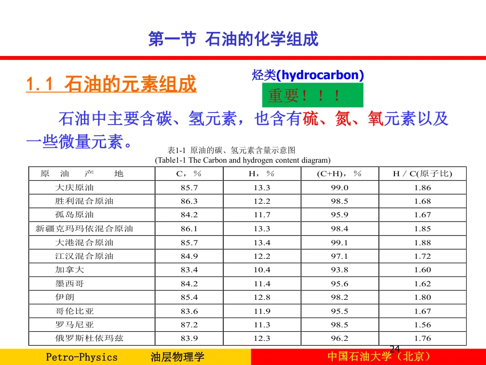
图上有什么：12 个国内外原油样的元素分析数据（5 列）：产地、C%、H%、(C+H)%、H/C 原子比。如大庆 85.7/13.3/99.0/1.86，孤岛 84.2/11.7/95.9/1.67，罗马尼亚 87.2/11.3/98.5/1.56。
怎么读：所有样品 C 落在 83~87%、H 落在 10~14%，两元素合计约 94~99%；H/C 原子比 1.56~1.88。H/C 越大，烃类越饱和、油越轻。
考点与易错：记区间不记个例——"石油以 C、H 为主（合计 95% 左右以上）"；H/C 原子比是衡量石油"轻重"的标尺，胶质沥青质多的重质油 H/C 低。
2. 表1-2 原油含硫量对比表（图片表）P25
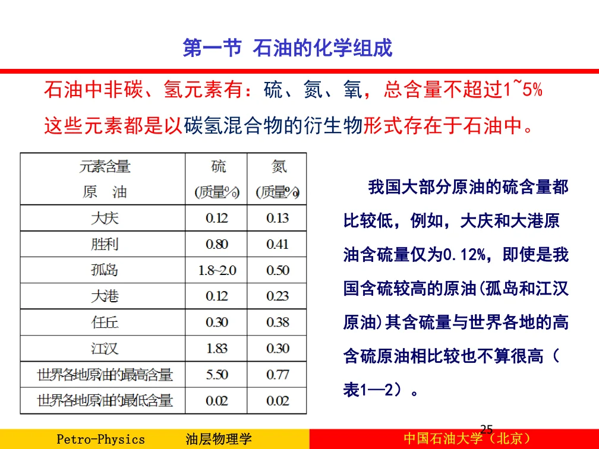
图上有什么：国内外原油含硫量对比表（以图片嵌入，表内数字不可复制）。
怎么读：结合本页正文——我国原油普遍低硫，大庆、大港含硫仅 0.12%；孤岛、江汉相对较高，属我国含硫较高的原油。
考点与易错：含硫量是质量百分数；为后面"低硫/含硫/高硫"三分类（0.5%、2% 界限）做铺垫。
3. 石油化合物两大类分类框图P26
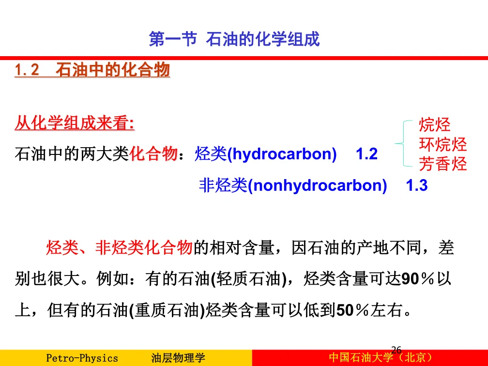
图上有什么：分支框图：石油中的化合物 → 烃类（烷烃、环烷烃、芳香烃）＋ 非烃类（含 S、N、O 的化合物）。
怎么读：轻质油烃类含量可达 90% 以上，重质油可低到 50% 左右，其余即非烃。
考点与易错：非烃化合物都是极性物质——这是后续学界面张力、吸附、乳化等现象的化学根源。
4. 三类烃分子结构图组（烷烃/环烷烃/芳香烃）P27–29重点
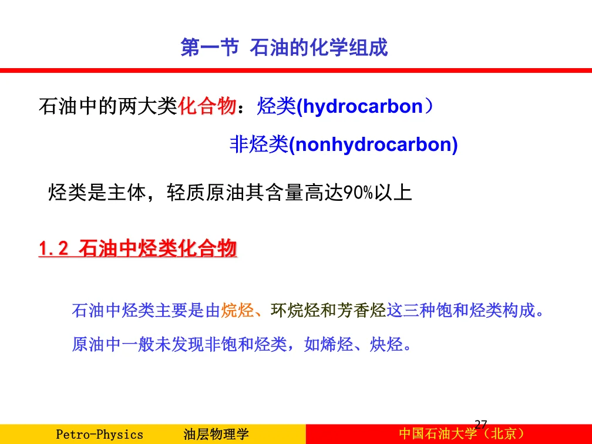
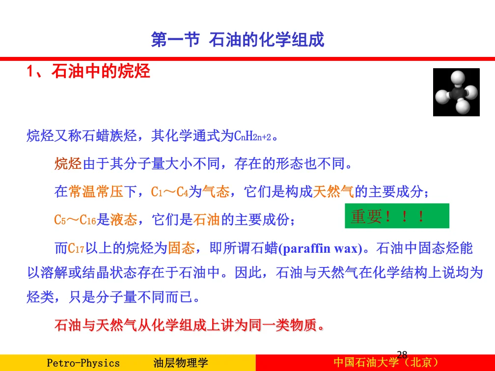
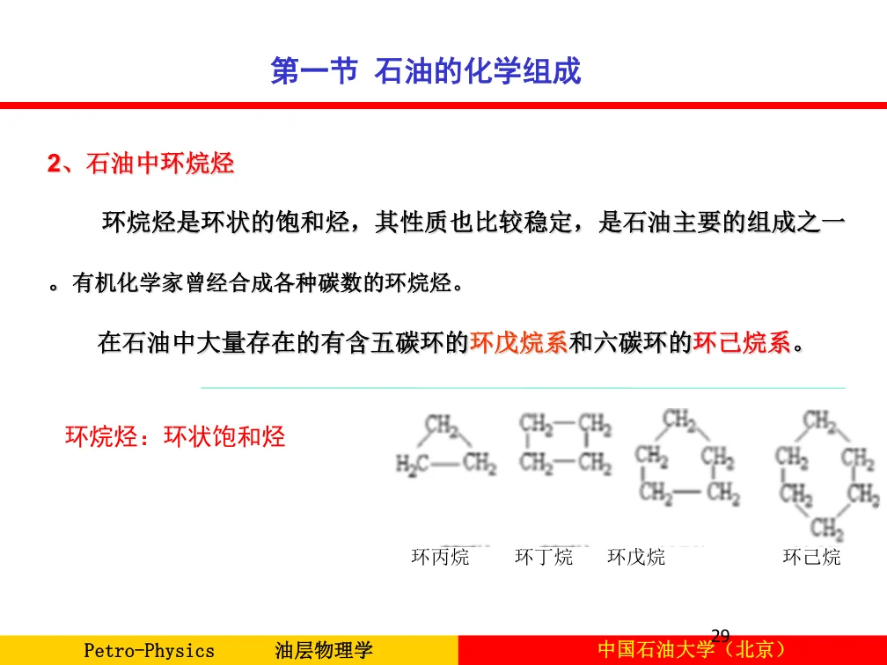
图上有什么：三类饱和烃的结构式/分子模型图，环烷烃一页标注了环丙烷、环丁烷、环戊烷、环己烷。
怎么读：烷烃通式 CnH2n+2；环烷烃是环状饱和烃，石油中大量存在五碳环（环戊烷系）和六碳环（环己烷系）；芳香烃含苯环。
考点与易错：①碳数三分：C₁₋₄ 气（天然气主要成分）、C₅₋₁₆ 液（石油主要成分）、C₁₇₊ 固（石蜡）——必背；②原油中一般不含烯烃、炔烃等不饱和烃；③老师划线："石油与天然气在化学组成上是同一类物质"；④分子量范围：最小甲烷 16，最大沥青质可达几千；石蜡 C17–35、地蜡 C36–55（P33）。
5. 非烃化合物结构式图组（含 S/N/O 化合物）P31
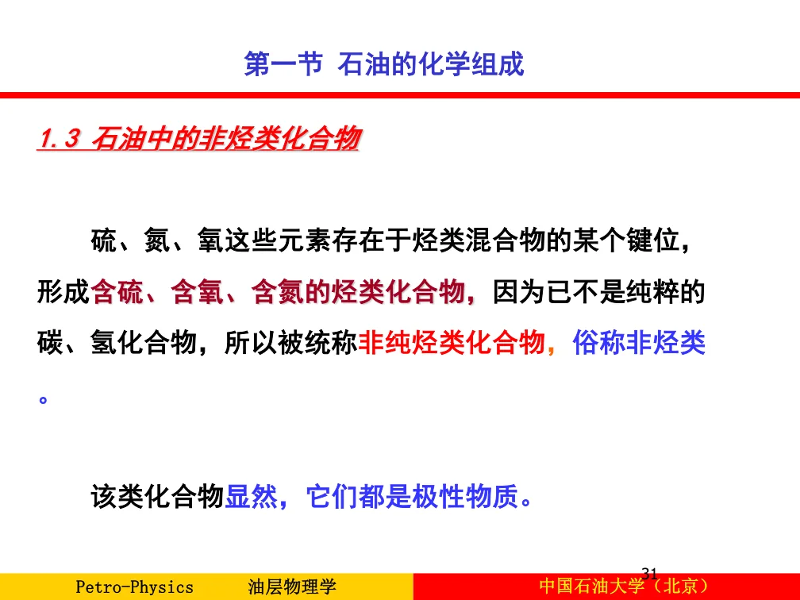
图上有什么：含硫、含氧、含氮化合物的示例结构式。
怎么读：S、N、O 以"杂原子"形式嵌在烃分子键位上，构成非烃化合物，全是极性物质。
考点与易错：与第 3 条呼应：极性来源→表面活性→影响界面性质。胶质的极性强即源于此。
6. 胶质、沥青质大分子示意图P32
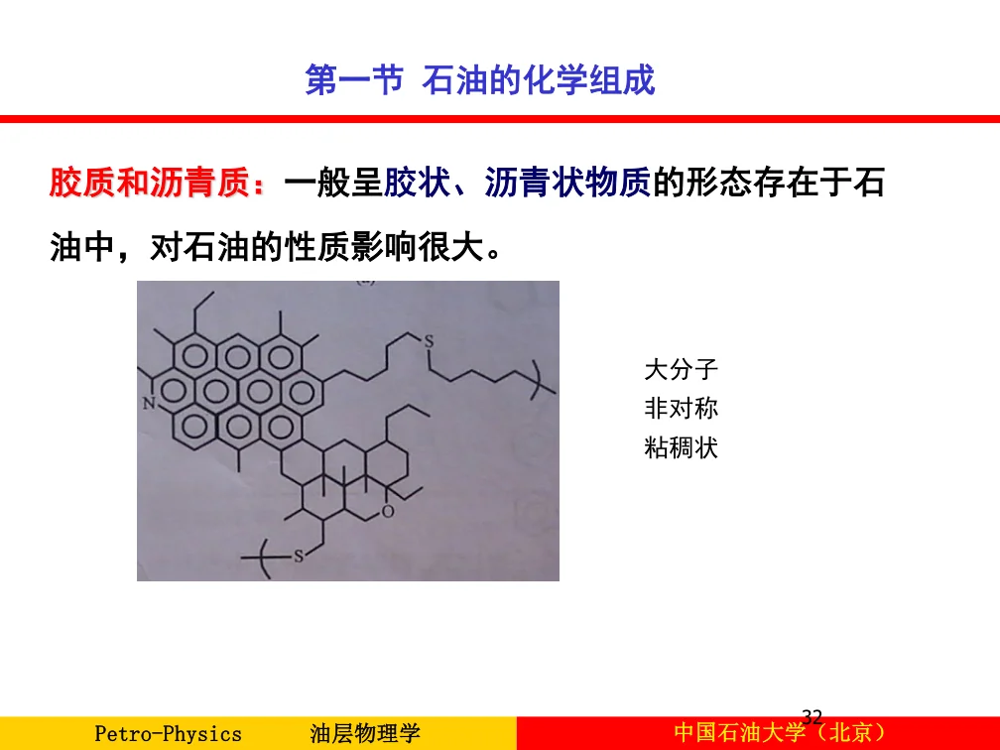
图上有什么：标注"大分子、非对称、粘稠状"的大分子结构示意。
怎么读：胶质、沥青质呈胶状/沥青状存在于石油中，分子大且不对称，是原油高密度、高粘度的物质基础。
考点与易错："对石油的性质影响很大"——具体落到表1-7：粘度与胶质沥青质含量正相关。
7. 牛顿内摩擦（平板速度梯度）示意图P39重点
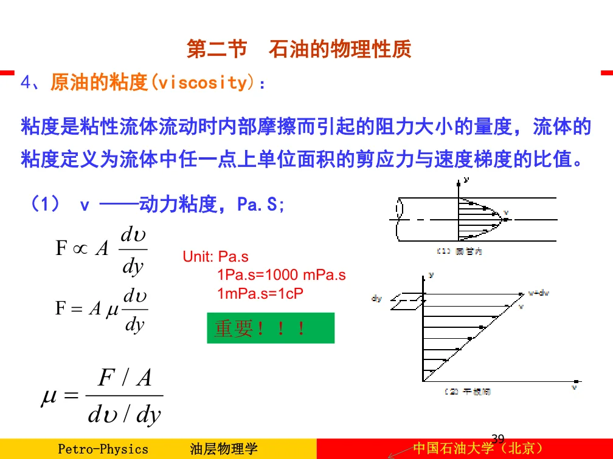
图上有什么：两平行平板间流体的速度梯度示意，配牛顿粘性定律 F/A = μ·dv/dy。
怎么读：粘度=单位面积上剪应力与速度梯度之比；单位 Pa·s，换算 1 Pa·s=1000 mPa·s，1 mPa·s=1 cP。
考点与易错：①定义式与单位换算是计算题底工；②说粘度必须注明温度；③动力粘度 μ 与运动粘度 ν=μ/ρ 别混。
8. 表1-7 我国一些油田的地面原油性质大表P41重点
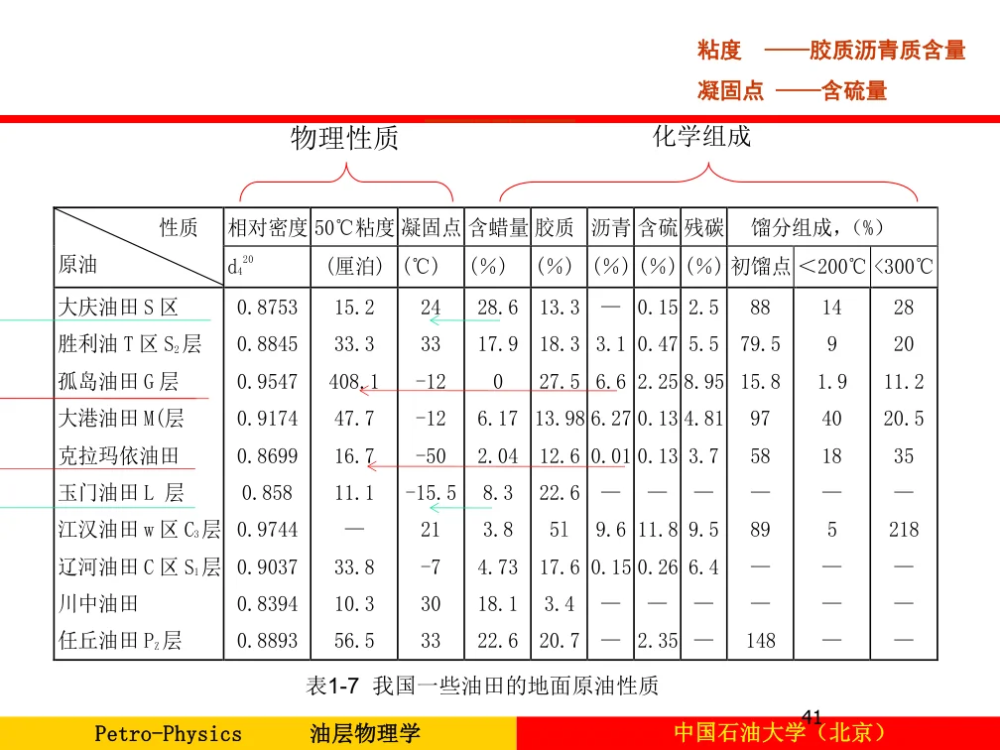
图上有什么：10 个油田 × 11 项性质的完整数据表：相对密度 d₄²⁰、50℃ 粘度、凝固点、含蜡量、胶质、沥青、含硫、残碳、馏分组成（初馏点、<200℃、<300℃）。如孤岛：0.9547 / 408.1 mPa·s / −12℃ / 胶质 27.5%；大庆 S 区：0.8753 / 15.2 / 24℃ / 含蜡 28.6%。
怎么读：横向看单油田、纵向找规律：粘度 ↔ 胶质沥青质同向（孤岛最粘、胶质最高）；凝固点 ↔ 含蜡量同向（大庆含蜡 28.6% → 凝固点 24℃；克拉玛依含蜡 2.04% → 凝固点低至 −50℃）；孤岛、江汉含硫较高（呼应表1-2）。
考点与易错：核心结论"石油物理性质的差异是其化学组成不同的反映"；考试常给两个油田数据，让你解释性质差异的原因——用"组成决定性质"的因果链作答。
9. 油气藏四级分类树状框图P51重点
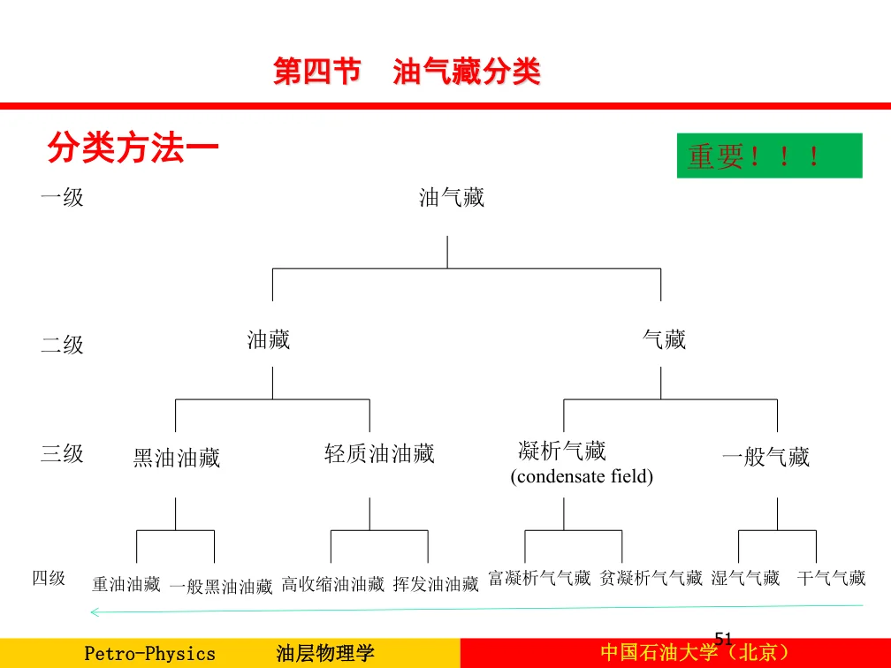
图上有什么：四级树：油气藏 →（油藏、气藏）→（黑油油藏、轻质油油藏｜凝析气藏、一般气藏）→ 八个末级（重质油油藏、一般黑油油藏、高收缩油油藏、挥发油油藏｜富凝析气气藏、贫凝析气气藏、湿气气藏、干气气藏）。
怎么读：先按储集主体分油/气两大支，再逐级按流体性质细分；"轻质油油藏"＝高收缩油/挥发油（P48 按相态分类呼应）。
考点与易错：八个末级名称及归属要默写；油/气分支的判别依据在第三章相图（P110–117），前后呼应着记。
第二章 天然气的高压物理性质（P53–96）
本章是"图版章"：Z 图版、临界参数表、Bg 曲线、粘度分区图、含水量图版全在这。P64 有一幅无文字大幅配图（位于 Z 定义与对比状态定律之间，为一组 Z 随压力变化的示意曲线）。
10. 天然气矿藏分类框图P54
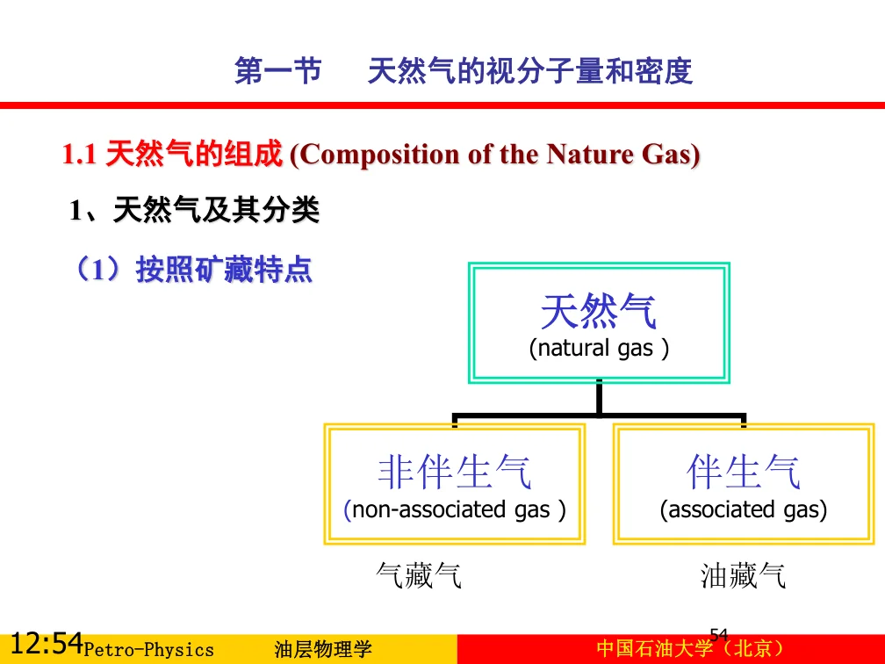
图上有什么：按矿藏特点的两级分类树：天然气 → 伴生气 / 非伴生气 →（气藏气、油藏气）。
怎么读：伴生气=与原油共存（气顶气、溶解气）；非伴生气=独立气藏（气藏气）。
考点与易错：下一页的干气/湿气（C₅⁺ 液体 13.5 cm³/标m³）与贫气/富气（C₃⁺ 94 cm³/标m³）界限数字在附录 B，别混用。
11. 天然气组成表示与换算示例表P57–58
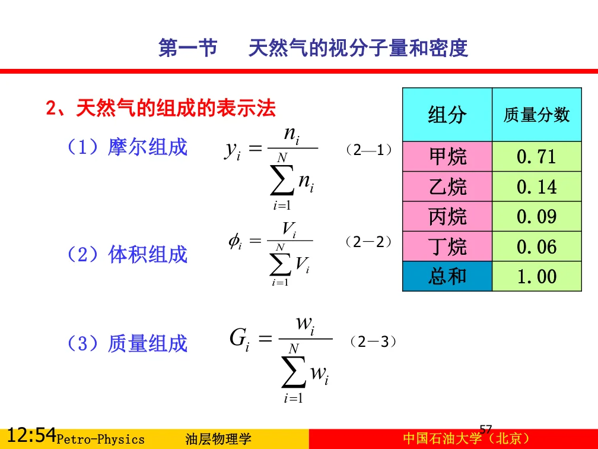
图上有什么：示例小表：甲烷 0.71、乙烷 0.14、丙烷 0.09、丁烷 0.06（质量分数，总和 1.00），用于演示三种组成及其换算。
怎么读：摩尔组成 yi=ni/n、体积组成 φi=Vi/V、质量组成 Gi=wi/G；质量→摩尔：yi=(Gi/Mi)/Σ(Gj/Mj)；体积组成=摩尔组成（标况 1 mol 气体 22.4 L）。
考点与易错：三组成换算是后面一切计算的第一步，"体积组成=摩尔组成"只对气体成立。
12. 图2-3 天然气压缩因子图版 Z=f(Pr,Tr)P67重点
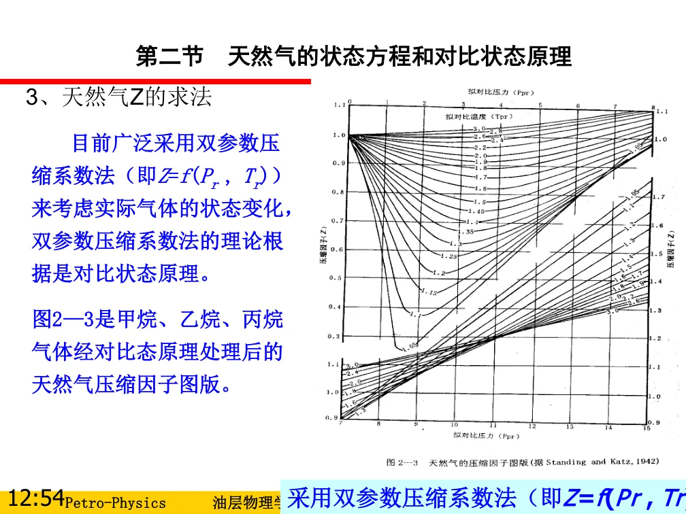
图上有什么：甲烷、乙烷、丙烷经对比态原理处理后的通用 Z 图版（据 Standing-Katz 1942）：横轴（视）对比压力 Ppr（0~15），纵轴 Z（0.3~1.1，右轴 1.2~1.7 为高压延伸段），曲线族以（视）对比温度 Tpr（约 1.0~3.0）为参变量。
怎么读：求 Z 四步走：组成 → 视临界参数 Ppc/Tpc（加权或图版法）→ 视对比参数 Ppr/Tpr → 查图读 Z。曲线形态：低压区 Z 随压力升高先降（分子引力主导，Z<1），过最低点后回升，高压下 Z>1（分子体积/排斥主导）；Tr 越低偏离 1 越显著。
考点与易错：①对比状态原理表述："相同对比状态下，各气体的 Z、粘度等内涵性质近似相同"——简答高频；②Z=V实际/V理想，是比值不是偏差量；③混合气必须用"视"参数（天然气没有真实临界点）。
13. 表2-3/2-4 烃类与非烃气体物性常数表P69重点
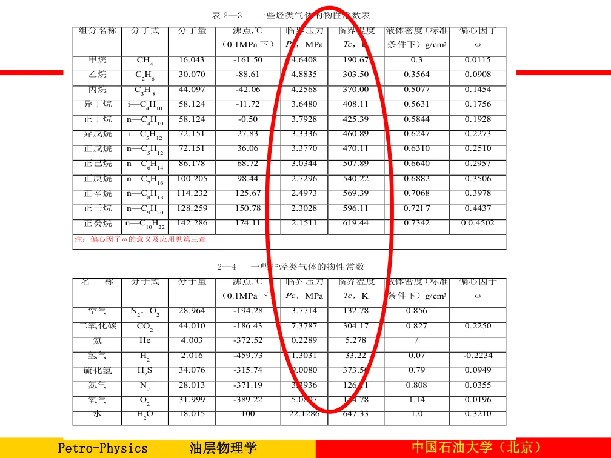
图上有什么：两张 8 列常数表（分子量、沸点、Pc、Tc、液体密度、偏心因子 ω）：表2-3 覆盖 C₁~C₁₀ 正构烷烃及 i/n-C₄、i/n-C₅；表2-4 覆盖空气、CO₂、He、H₂、H₂S、N₂、O₂、H₂O。
怎么读：同系物规律随碳数增加：分子量↑、沸点↑、Tc↑、Pc↓、ω↑。关键锚点值：CH₄ M=16.04、Pc=4.64 MPa、Tc=190.67 K；C₂H₆ 30.07/4.88/303.5；C₃H₈ 44.10/4.26/370.0；n-C₄ 58.12/3.79/425.4；CO₂ 44.01/7.38/304.17；空气 28.96≈29。
考点与易错：①算视临界参数的取数来源；②γg=M/29 的"29"就是空气分子量；③"偏心因子 ω 的意义及应用见第三章"——记住它衡量分子偏离球形/非中心力的程度即可。
14. 经验图版法：γg → 视临界参数图版P71
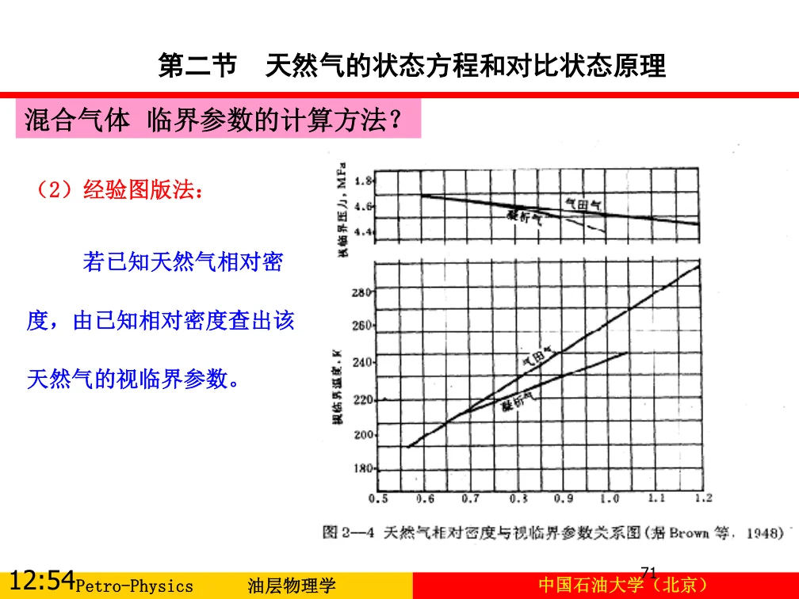
图上有什么：已知天然气相对密度 γg、直接查视临界温度 Tpc 与视临界压力 Ppc 的经验曲线图版。
怎么读：横轴 γg，两条曲线分别读 Tpc（K）与 Ppc（MPa）。适用于只知道相对密度、不知道组成的情况。
考点与易错：与加权法 Ppc=ΣyiPci 的适用场景区分：组成已知→加权法；只有 γg→图版法。两法结果略有差异，考试按题目给的条件选。
15. Wichert 方法非烃校正图版P73重点
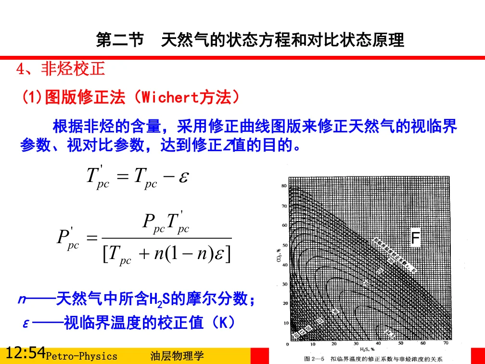
图上有什么：以 A（H₂S+CO₂ 摩尔分数之和）、B（H₂S 摩尔分数）为参数、查视临界温度校正值 ε 的曲线图版；配公式 T′pc = Tpc − ε、P′pc = Ppc·T′pc/[Tpc+n(1−n)ε]（n 为 H₂S 摩尔分数）。
怎么读：含非烃时先查/算 ε，校正视临界参数，再用校正后的视对比参数查 Z。经验公式版（Wichert-Aziz，式 2-18）：ε=120(A0.9−A1.6)+15(B0.5−B4)。
考点与易错：最常考的是免校正条件：非烃体积含量<5%（其中 N₂<2%、CO₂<1%）且 CH₄>50%，否则误差大于 3%；三种校正方法（图版修正/经验公式/Eilerts 加权，后者适用非烃>40%）名称对得上号即可。
16. 图2-6 某天然气气样 P–Bg 关系曲线P78
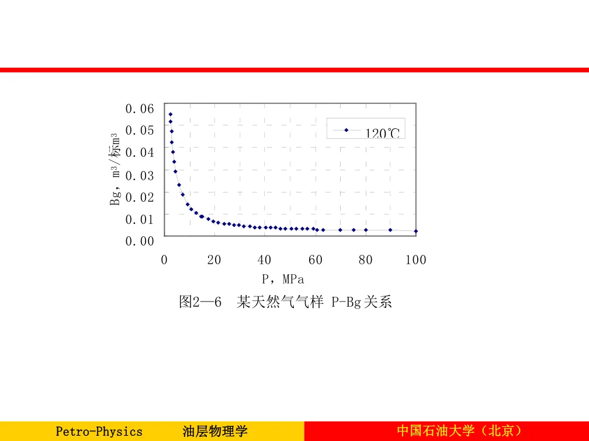
图上有什么：120℃ 等温线的 Bg–P 曲线：纵轴 Bg 0~0.06 m³/标m³，横轴 P 0~120 MPa。
怎么读：Bg 随压力增大而减小（近似双曲线），数量级 10⁻²~10⁻³——同一团气在地下的体积只有地面的百分之几。
考点与易错：计算题直接用公式 Bg=(273+t)/293 · PscZ/P；标况取 20℃、0.1 MPa；膨胀系数 Eg=1/Bg。别把 Bg 与原油 Bo（略大于 1）的量级搞混。
17. 图2-7 视对比压缩系数图版 Cpr=f(Ppr,Tpr)P81
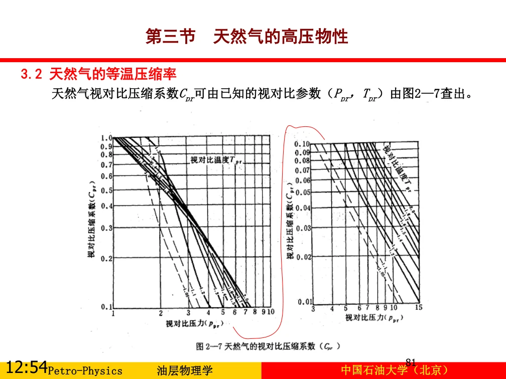
图上有什么：视对比压缩系数图版：横轴 Ppr、曲线族以 Tpr 为参变量、读 Cpr。
怎么读：查出 Cpr 后换算 Cg=(1/Ppc)[1/Ppr−(1/Z)(∂Z/∂Ppr)Tpr]；也可由定义式 Cg=−(1/V)(∂V/∂P)T 理解。
考点与易错：量纲 1/MPa；气体压缩系数比原油、地层水大得多（气体弹性强），这是气驱/弹性驱动能量的来源。
18. 图2-9 气体粘度的高压区/低压区划分图P82重点
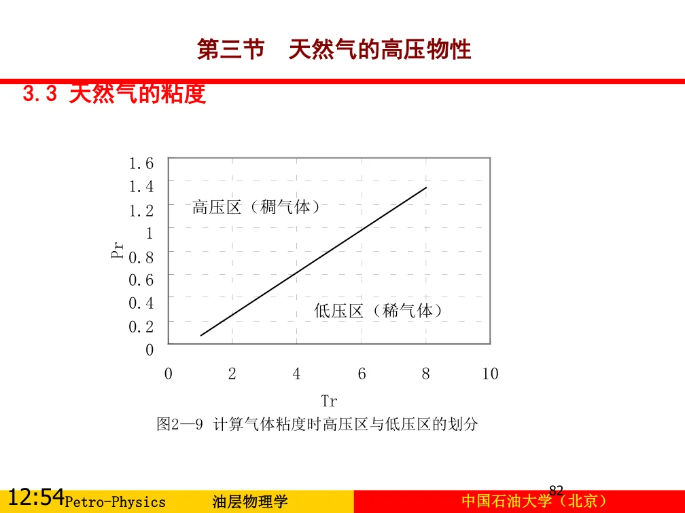
图上有什么：Pr–Tr 平面（横轴 0~10、纵轴 0~1.6）上一条分界曲线，把平面分成"低压区（稀气体）"与"高压区（稠气体）"两块。
怎么读：算出体系的 Pr、Tr，先定位落在哪个区，再套用该区的粘度规律。
考点与易错：两区规律完全相反，对照背：低压区——粘度与压力无关、随温度↑而↑、随分子量↑而↓（μ=ρυλ/3，分子动理学）；高压区——粘度随压力↑而↑、随温度↑而↓、随分子量↑而↑（像液体）。"为什么反"：机理从分子碰撞输运变为分子层间摩擦。
19. 低压气体粘度–温度曲线族 / 图2-10 大气压粘度图版P84、P86
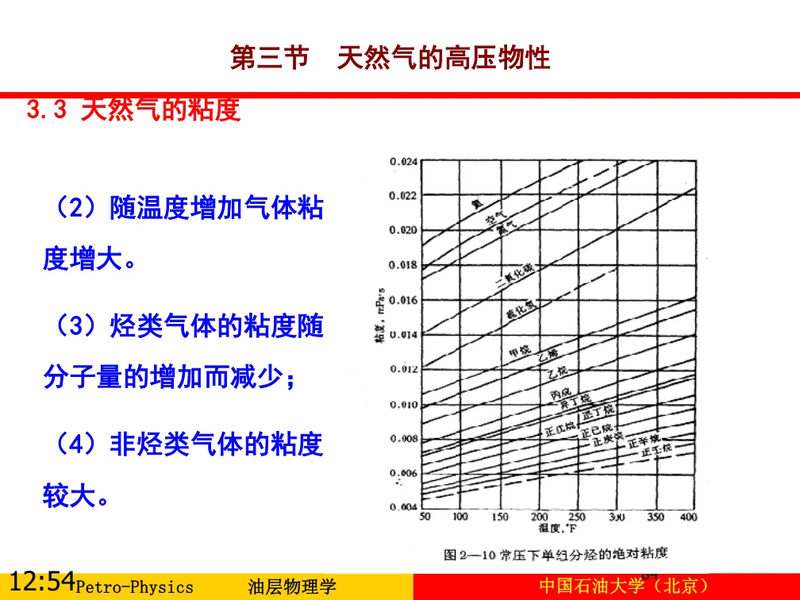
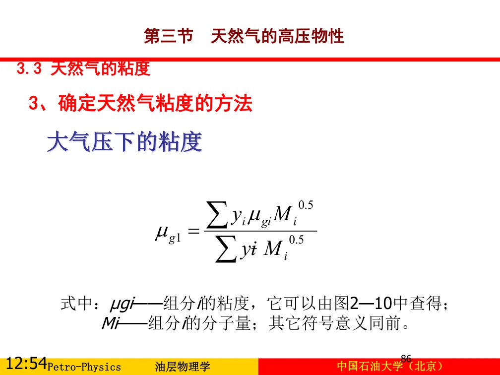
图上有什么：P84 一幅粘度–温度关系曲线图（不同分子量烃气与非烃气对比，据正文）；P86 为图2-10"大气压下单组分气体粘度"图版缩图，配混合规则 μg=ΣyiμgiMi0.5/ΣyiMi0.5。
怎么读：大气压下先查各组分 μgi，再按 yi·√Mi 加权混合；非烃气体（CO₂、H₂S、N₂）粘度偏大。
考点与易错：加权因子是 yi√Mi 不是简单 yi；求高压粘度=大气压粘度×粘度比（另一图版），"两步走"流程要会说。
20. 图2-13 Mcketta-Wehe 天然气含水量图版（露点图）P90
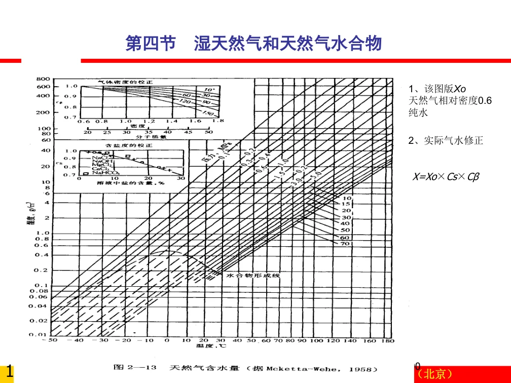
图上有什么：1958 年 Mcketta-Wehe 含水量图版（又称天然气露点图），占版面约 2/3；基图 Xo 对应 γg=0.6、纯水；实际值 X=Xo×Cs×Cβ（含盐、相对密度校正）。
怎么读：在温度–压力网格上读含水量；含水量随压力↑而↓、随温度↑而↑；含盐量↑→含水量↓；γg 越大→含水量越少。
考点与易错：四条规律（P、T、盐、相对密度）背下来即可；绝对湿度 X=Pvw/(RwT)、相对湿度 φ=Pvw/Psw（公式速查表 A）。
21. 水合物笼形结构示意图P92
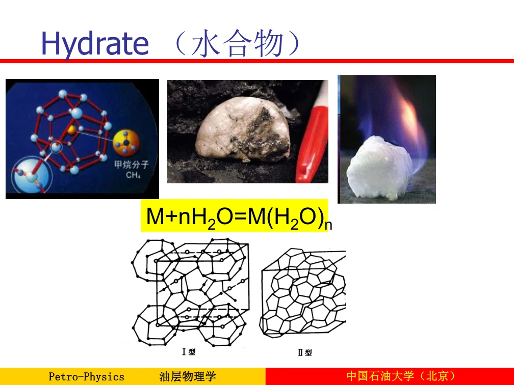
图上有什么：水合物结构示意与实物图组：水分子靠氢键构成主体笼形网络，气体分子充填在孔穴中；反应式 M+nH₂O=M(H₂O)n；下排为 I 型、II 型两种晶型结构。
怎么读：结晶状笼形化合物（包络物），俗称"可燃冰"。
考点与易错：三个工程意义（P93）：潜在资源、井筒/气嘴堵塞影响流动、地面储运问题。
22. 水合物生成条件相图P94重点
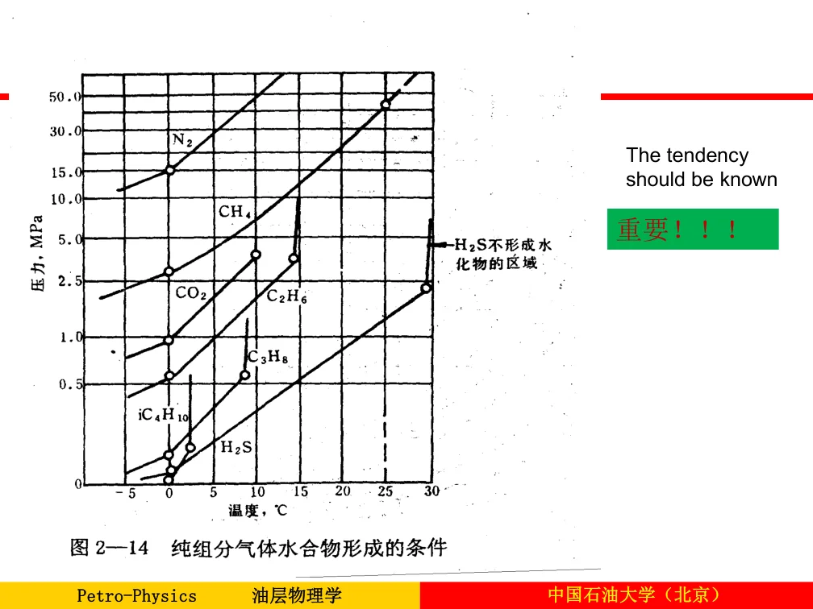
图上有什么：大幅 P–T 相界线图（图内文字不在文本层，据上下文与教材通用形态）：水合物生成平衡线 + 天然气包络线，标出易生成水合物的温压区。
怎么读：水合物在低温、高压一侧生成——温度低于生成曲线对应温度且压力足够高时出现；"The tendency should be known"（老师原话：趋势必须知道）。
考点与易错：判断给定井筒/节流条件会不会生成水合物；防治思路即破坏其生成条件（加热、降压、注抑制剂、脱水）。
第三章 油气藏烃类的相态和汽液平衡（P97–163）
本章是全课程图表密度最高的一章：所有相图共用一套"泡点线/露点线/临界点"语言，先看懂图 27（包络图），后面 28–32 全是它的变体。
23. 单组分体系 p–T 相图（乙烷）P103重点
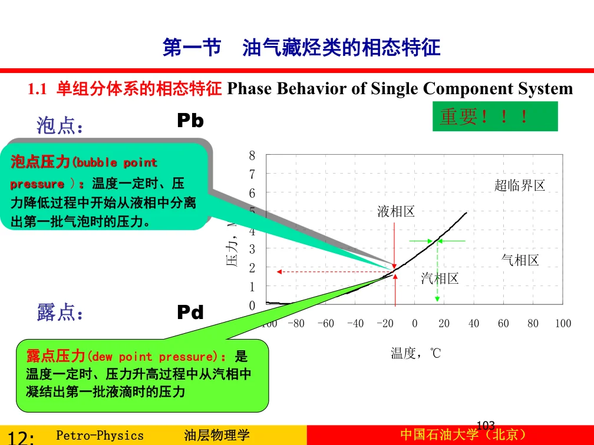
图上有什么：p–T 图上一条单调上升的饱和蒸汽压曲线：纵轴 0~8 MPa、横轴 −100~100 ℃；曲线左侧液相区、右侧汽相区、终点以上超临界区；线上标 Pb、Pd。
怎么读：单组分体系泡点线与露点线重合为同一条蒸汽压曲线——升温或降压跨过它就沸腾，反向则凝结。曲线终点是临界点，超过后单相无法再靠加压液化。
考点与易错：泡点/露点定义必背：泡点=恒温降压中第一批气泡出现的压力；露点=恒温升压中第一批液滴出现的压力。"单组分 Pb=Pd、多组分才分开"是判断题常客。
24. 双组分体系环形相图P104重点
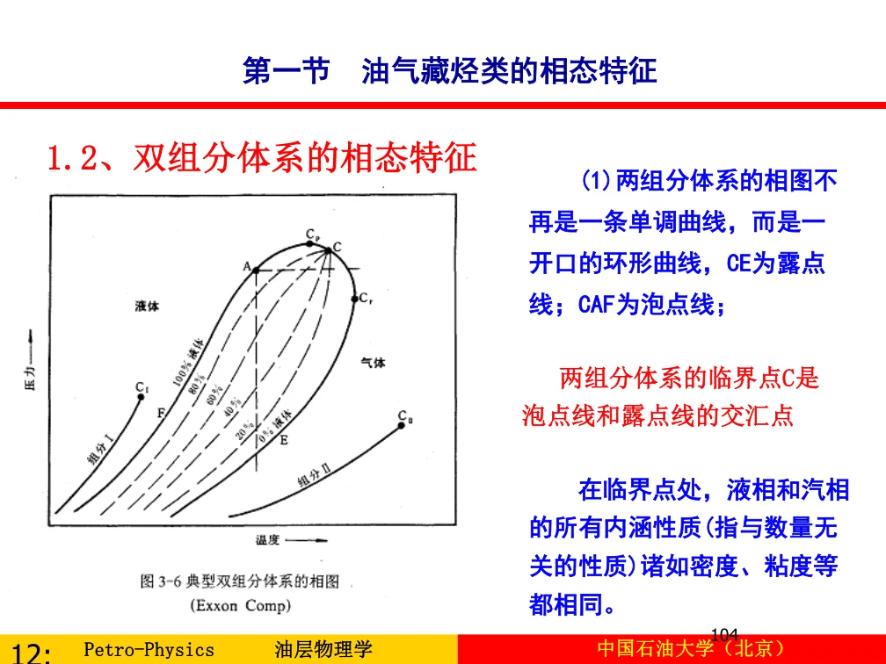
图上有什么：开口的环形包络线：CAF 为泡点线、CE 为露点线，两线交汇于临界点 C；环内为两相区。
怎么读：与单组分的本质区别——泡点线、露点线分离，出现两相区；临界点处汽液相的内涵性质（密度、粘度等与数量无关的性质）完全相同。
考点与易错：临界点不再是"最高温度/最高压力"点——环的右端另有临界凝析压力（最高点）与临界凝析温度（最右点），这一铺垫在下一张图正式展开。
25. 多组分烃类体系相包络图（本章母图）P106–107重点
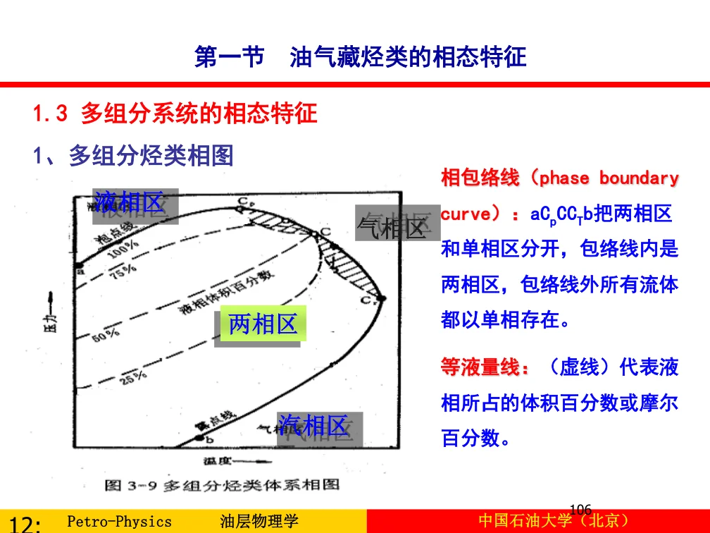
图上有什么：完整包络线 a—C—pC（泡点线）+C—T（露点线）：包络内两相区、外为单相区（液相/汽相/气相）；图内虚线为等液量线（液相体积或摩尔百分数）；三个特征点：C 临界点、pC 临界凝析压力（包络最高点）、T 临界凝析温度（包络最右点）。
怎么读：泡点线=液相 100% 线=饱和压力线（降到它出现第一批气泡）；露点线=汽相 100% 线（升压到它出现第一批液滴）；进入两相区后用等液量线读液量份额。
考点与易错：三个点各是各的：临界点 ≠ 最高压力点 ≠ 最高温度点；"饱和压力"专指泡点压力。这是后面所有相图题的母版，务必能把五个名字标注到图上。
26. 等温反凝析区（逆行凝析）图P108重点
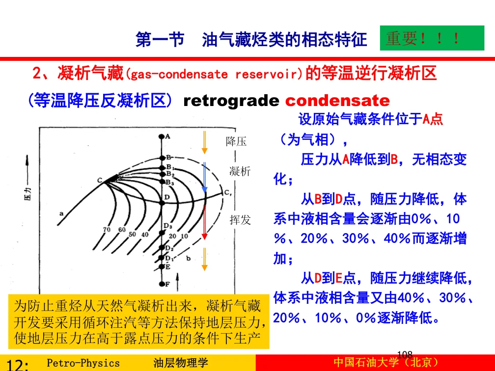
图上有什么：包络图上一条等温竖直降压路径 A→B→D→E，叠着等液量线族（10%~70%），沿降压路径 B→D 液量由 0 增至 40%，最大液量点在 D 附近；旁注"挥发/凝析、降压"。
怎么读：A→B 单相气无相变；B→D 降压反而凝析，液量 0→40% 增加；D→E 继续降压液量 40%→0 反而再蒸发；到 E 复为纯气。这种"压力降低反而析出液相"的反常行为即等温反凝析。
考点与易错：①反常段与最大反凝析液量点（D）要能指出；②开发对策必考——凝析气藏采用循环注气等方式保持地层压力高于露点压力生产，防止重烃在地层中凝析损失。
27. 等压降温反凝析区图P109
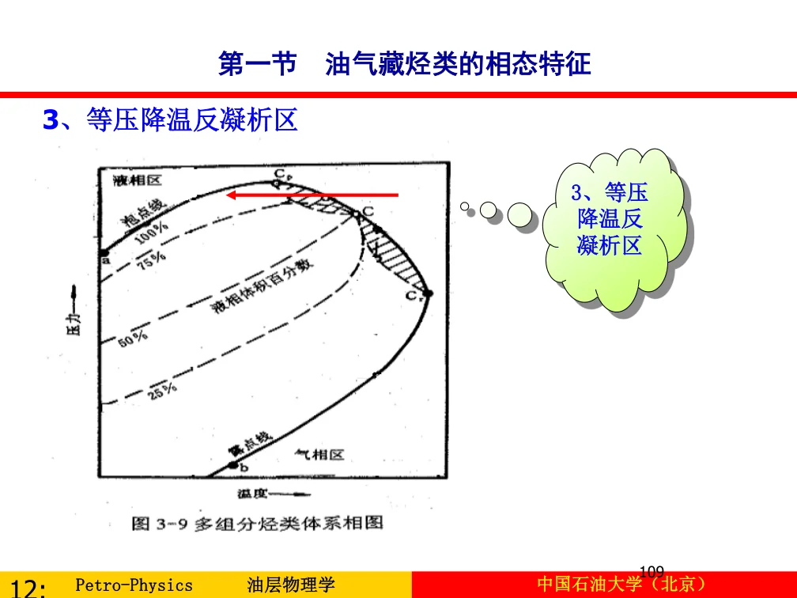
图上有什么：同一包络图上改作等压水平线，展示降温方向的反凝析区（配一张放大路径图）。
怎么读：与图 26 成对：竖线（等温降压）与横线（等压降温）各切出一块反常区。
考点与易错：考试问"两种反凝析"时，答"等温反凝析＋等压反凝析"并各配路径描述；等温反凝析是重点中的重点。
28. 油气藏类型判别相图（J/I/L/F/A 五点）P110–111重点
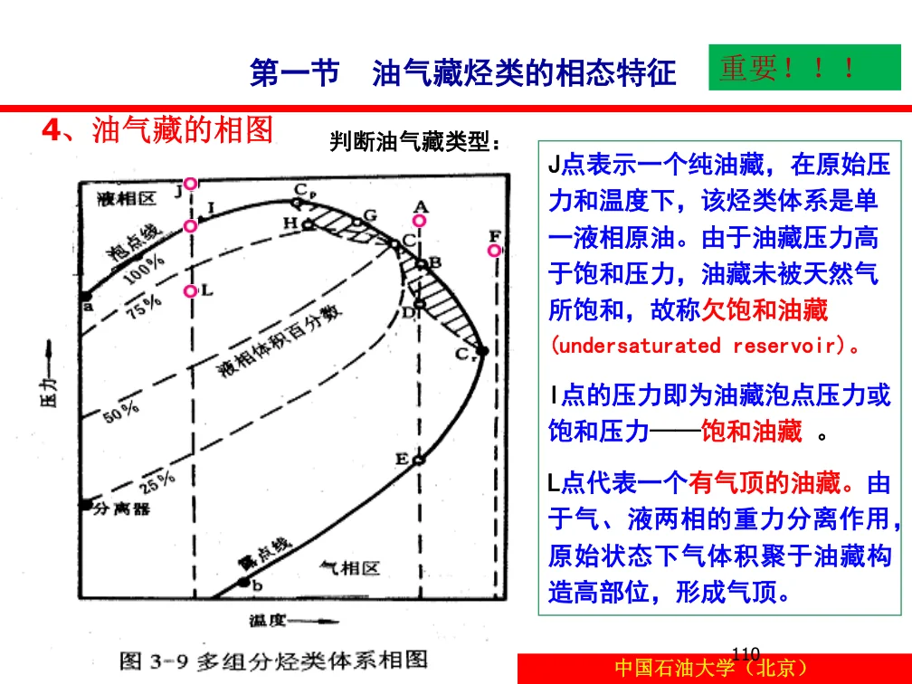
图上有什么：一张包络图上标 5 个地层条件点：J（欠饱和油藏）、I（泡点线上=饱和油藏）、L（跨泡点线=带气顶油藏）、F（气藏）、A（凝析气藏）。
怎么读：油类：地层温度低于临界温度——J 在泡点线上方（未饱和）、I 正好在泡点线上（P 为饱和压力）、L 跨线（构造高部位聚气成气顶）；气类：地层温度高于临界温度——F 全程不穿两相区，A 位于等温反凝析区上方（P 高于临界压力、T 介于 Tc 与临界凝析温度之间）。
考点与易错："判断油气藏类型"老师标了重要——判据两句话：先看地层温度相对临界温度的位置定油/气，再看地层压力相对包络线的位置定具体类型。
29. 五种油气藏的相图组（黑油/轻质油/凝析气/湿气/干气）P113–117重点
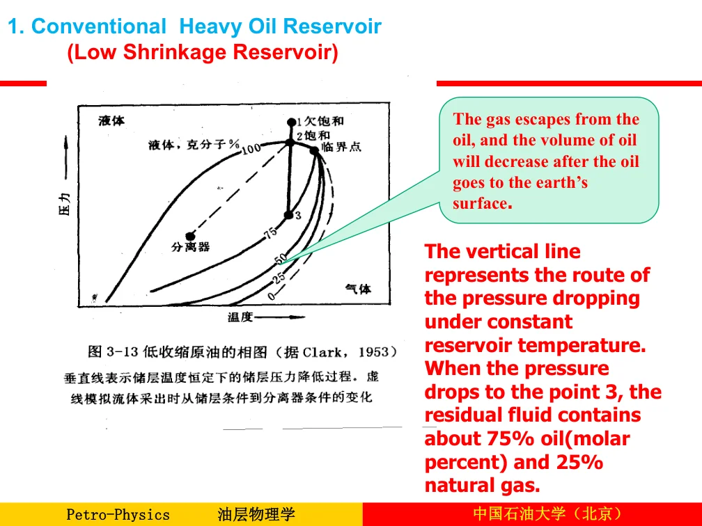
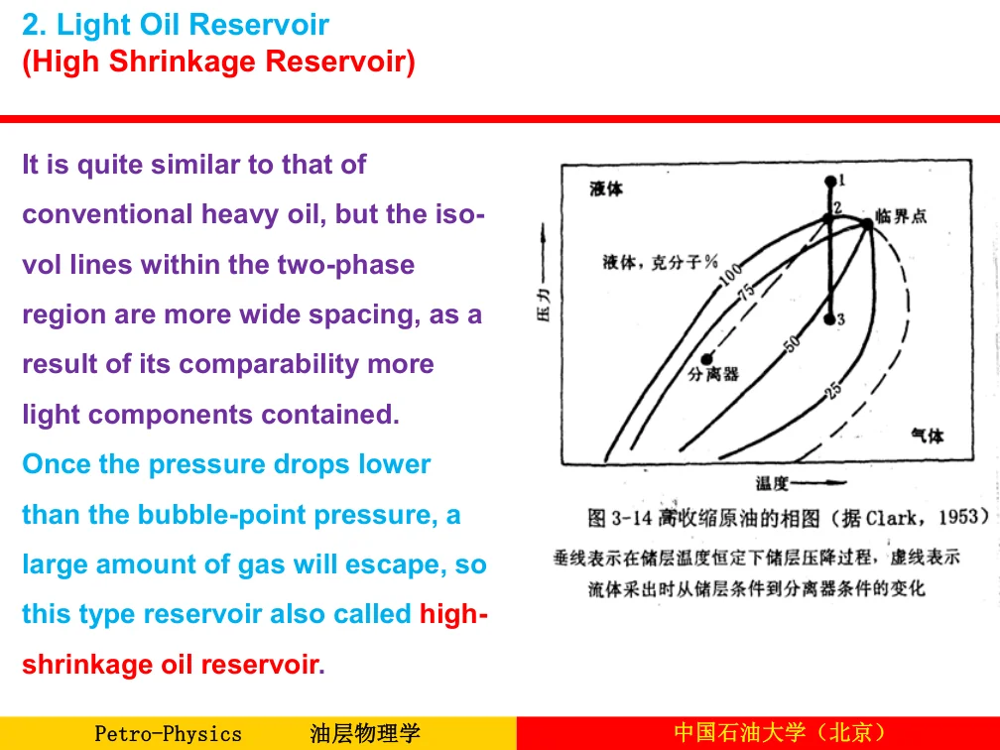
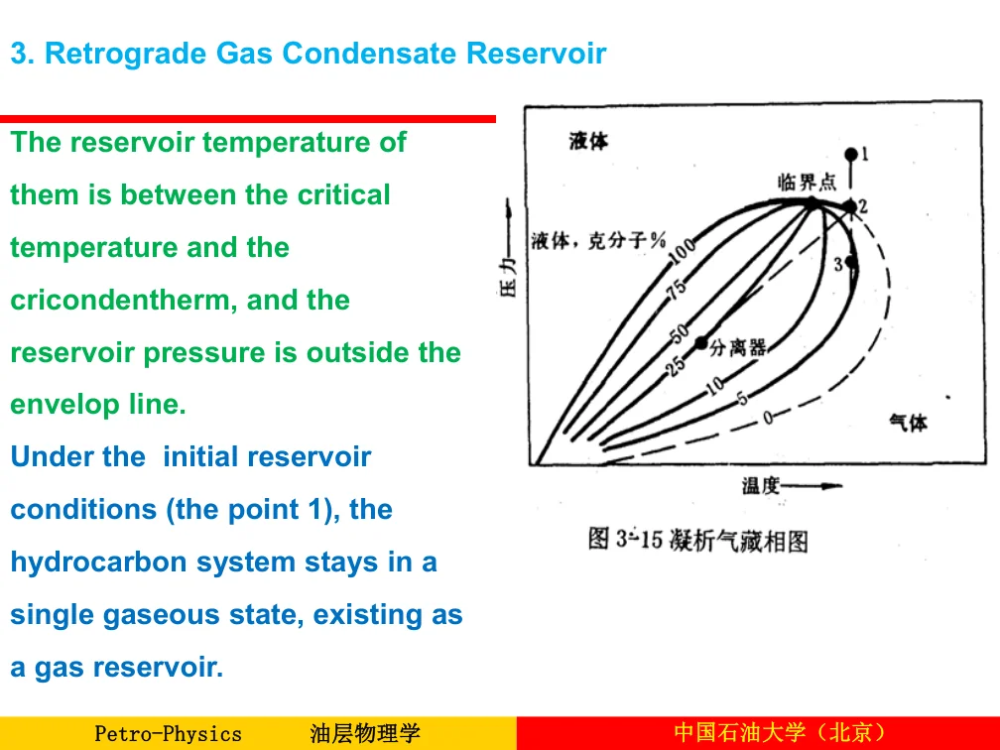
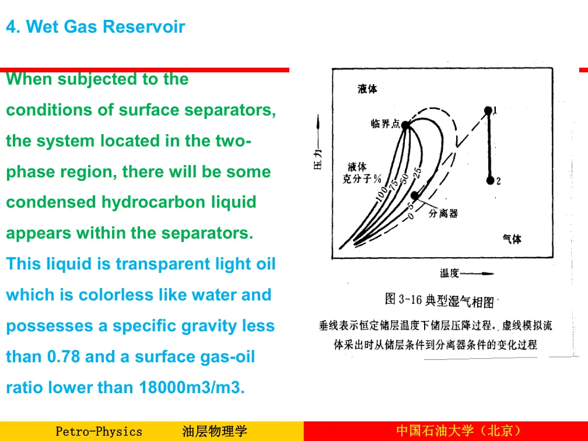
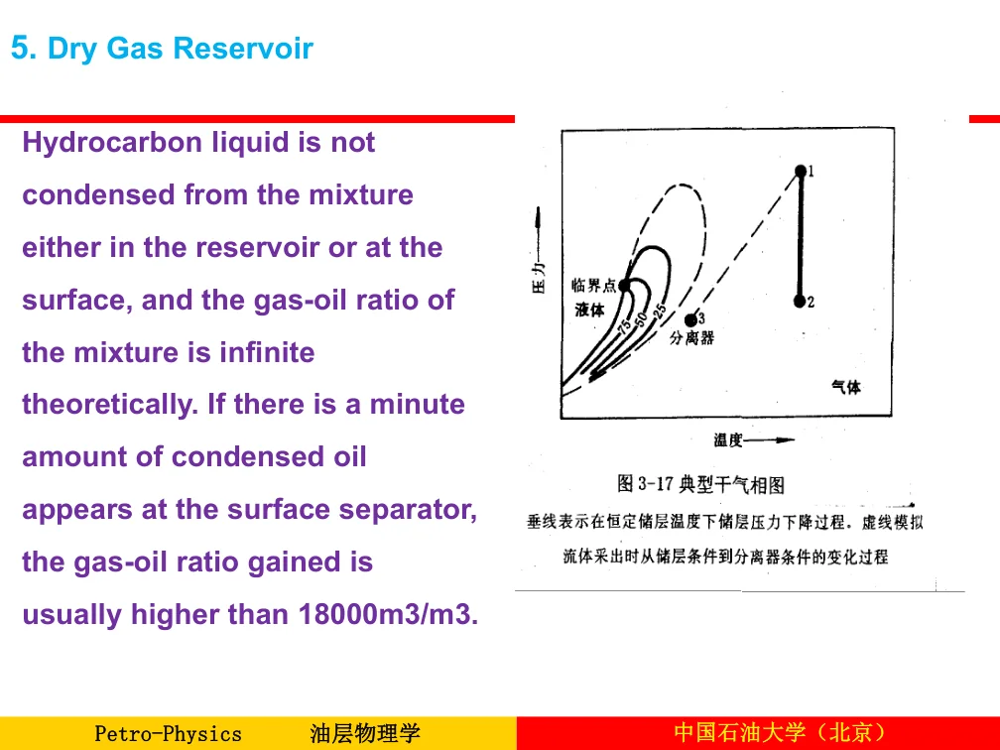
图上有什么：五张同构相图，各画一条等温降压开发线：常规重质油（低收缩/黑油）等液量线密集，降到点 3 时残余流体仍含约 75% 油（摩尔）；轻质油（高收缩）等液量线间距宽，过泡点后大量脱气；凝析气藏初始点 1 为单相气、降压进反凝析区；湿气藏地层内不进两相区、但分离器条件落入两相区（地面凝出 γ<0.78 的无色轻油，GOR<18000 m³/m³）；干气藏地层与地面都不凝析（GOR>18000，理论无穷大）。
怎么读：五张图横向对比三个要素：包络线胖瘦（轻组分越多越扁）、开发线与两相区的关系（地层内是否反凝析）、分离器是否落进两相区（地面有无凝析油）。
考点与易错：①命名规则（P112 英文小结）：按临界点在包络线上的相对位置与地层条件命名；流体分子量从气藏→凝析气藏→挥发油藏→油藏递增；②湿气 vs 凝析气的鉴别点：地层内是否反凝析；③GOR 18000 是湿/干气分界数字。
30. CO₂ 超临界相态图P118
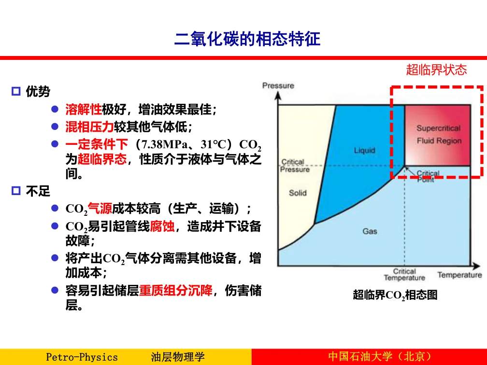
图上有什么：CO₂ 的 p–T 相图，标出临界点（31℃、7.38 MPa）与超临界区。
怎么读：超过临界温压后进入超临界态：密度似液体、粘度似气体、扩散能力强、溶解能力极好。
考点与易错：结合 PPT 列的优缺点记：优点=溶解性好增油效果佳、混相压力比其他气体低；缺点=气源成本高、易腐蚀管线设备、产出气分离需额外设备、易引起储层重质组分（沥青质）沉降伤害储层。
31. 表3-1~3-4 理想溶液相平衡计算例题组P126–131重点
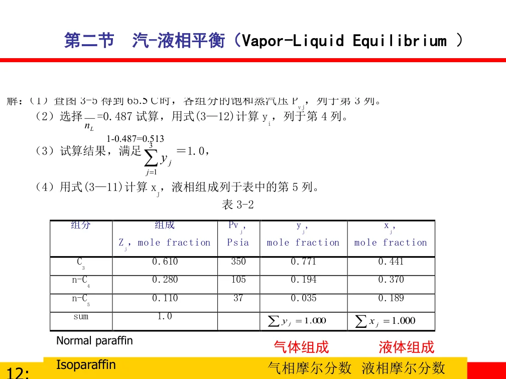
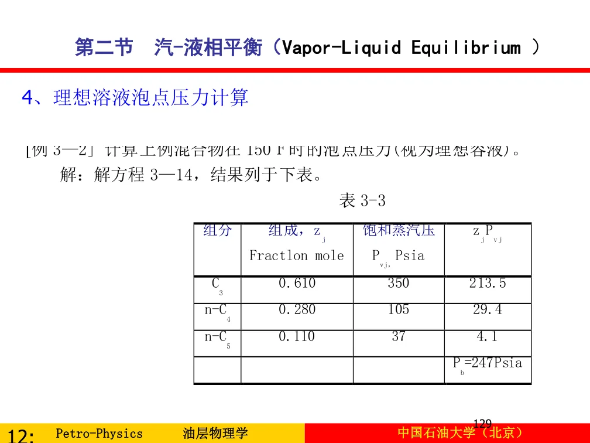
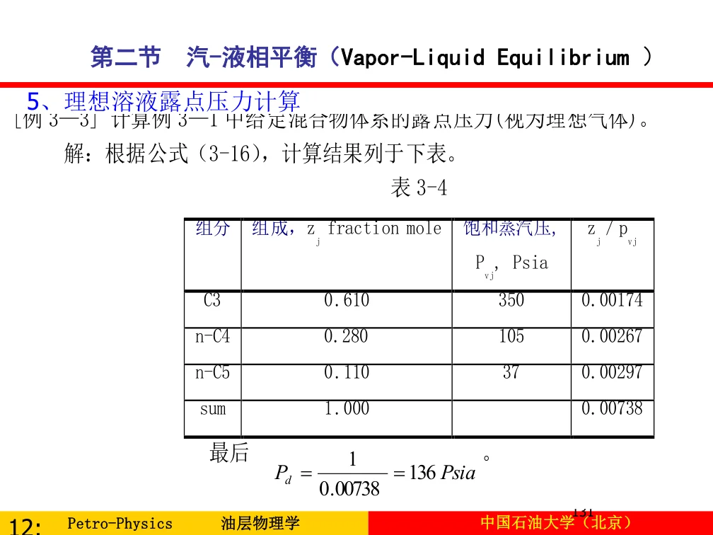
图上有什么：同一混合物（C₃ 0.610、n-C₄ 0.280、n-C₅ 0.110）的四张计算表：表3-1 组成；表3-2 闪蒸组成试算（65.5℃、200 Psia，取 nL=0.487 使 Σyj=1，得 yj=0.771/0.194/0.035，xj=0.441/0.370/0.189）；表3-3 泡点压力 Pb=ΣzjPvj=213.5+29.4+4.1=247 Psia；表3-4 露点压力 Pd=1/Σ(zj/Pvj)=1/0.00738=136 Psia。
怎么读：Pvj 从图 3-5（饱和蒸汽压图）按温度查取；试算流程五步：设 nL→算 yj→Σyj=1?→算 xj→求 nL、ng。
考点与易错：泡点是加权平均、露点是调和平均，公式形式绝不能混；结果验证 Pb(247)>Pd(136) 合理。这套数字是期末计算题的"标尺答案"。
32. 表3-5 真实溶液试算表（例3-4）P136
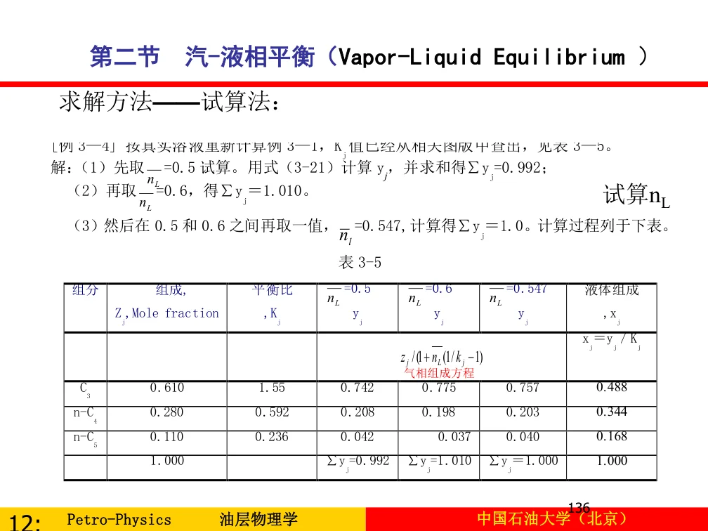
图上有什么：试算过程表，三个方案的 yj 并排：nL=0.5→Σyj=0.992；nL=0.6→Σyj=1.010；nL=0.547→Σyj=1.000（成立）；末列 xj=yj/Kj=0.488/0.344/0.168。
怎么读：与例3-1 的区别在于 Kj 不再是 Pvj/P，而是从图版查出的实际平衡比；试算思路不变——调 nL 至 Σyj=1。
考点与易错："真实溶液怎么改公式"——把 Pvj/P 换成 Kj（查图版），计算框架完全一样。
33. 例3-5 试算 K 值数据条P138
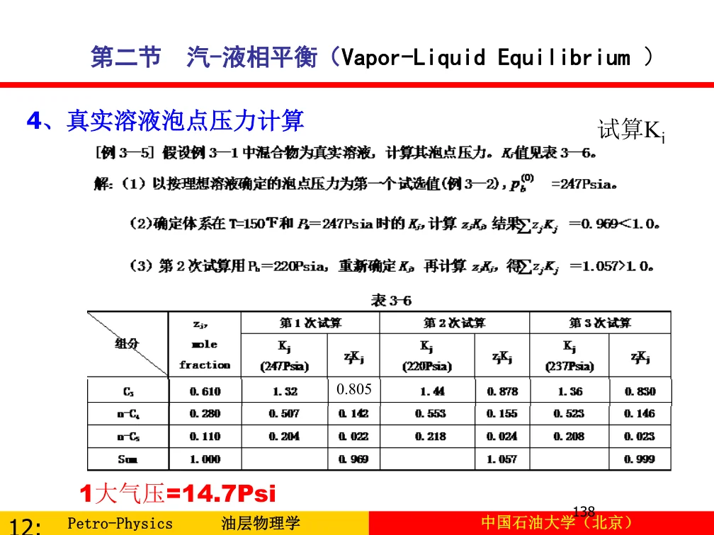
图上有什么：三幅横条图片拼成的数据截图（图版/数据表截条，图内文字不可复制），页面文字仅"试算 Kj""0.805""1 大气压=14.7 Psi"。
怎么读：例3-5 的配套数据——从 K 图版读取各试算压力下的 Kj，代入 ΣZjKj 判据。
考点与易错：单位换算细节：1 atm=14.7 psi；考试给英制数据别慌。
34. 图3-19 线性插值确定泡点压力P139
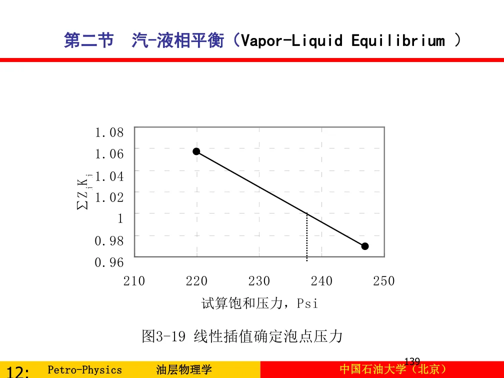
图上有什么：纵轴 ΣZjKj（0.96~1.08）对横轴试算饱和压力（210~250 Psi）的关系点，直线内插到 ΣZjKj=1。
怎么读：两次试算得两个点，连线与 ΣZjKj=1 水平线的交点横坐标即泡点压力。
考点与易错：计算题最后一步的规范表述："由两次试算结果线性内插"；ΣZjKj=1 是泡点判据、Σ(zj/Kj)=1 是露点判据，别写反。
35. 表3-7 露点压力计算表（例3-6）P141
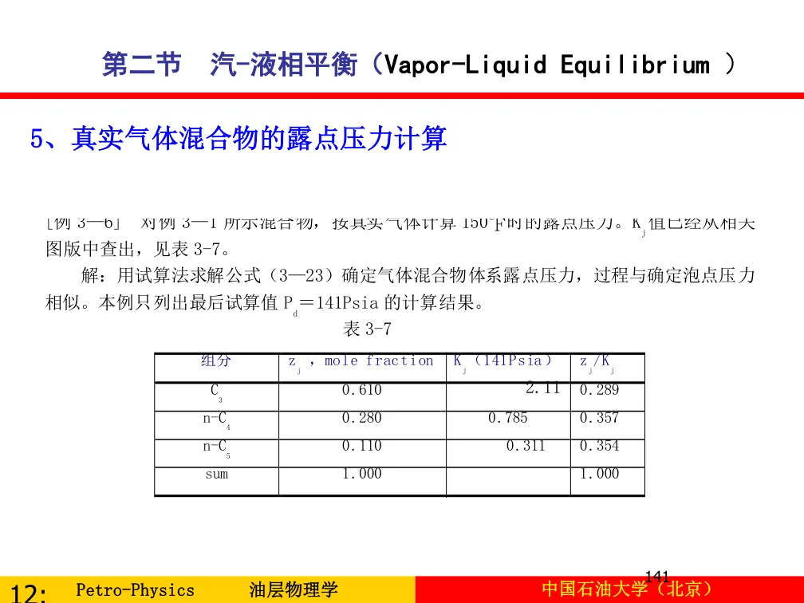
图上有什么：150℉、试算值 Pd=141 Psia 下的 Kj（2.11/0.785/0.311）与 zj/Kj（0.289/0.357/0.354），合计 Σ=1.000。
怎么读：露点试算只列最终成立的方案；判据 Σ(zj/Kj)=1 达成即 Pd=141 Psia。
考点与易错：同一混合物 Pb>Pd 的关系在真实体系里依然成立；露点时体系几乎全是气（ng=1）。
36. 图3-20 平衡比 Kj–P 等温曲线族P143–144重点
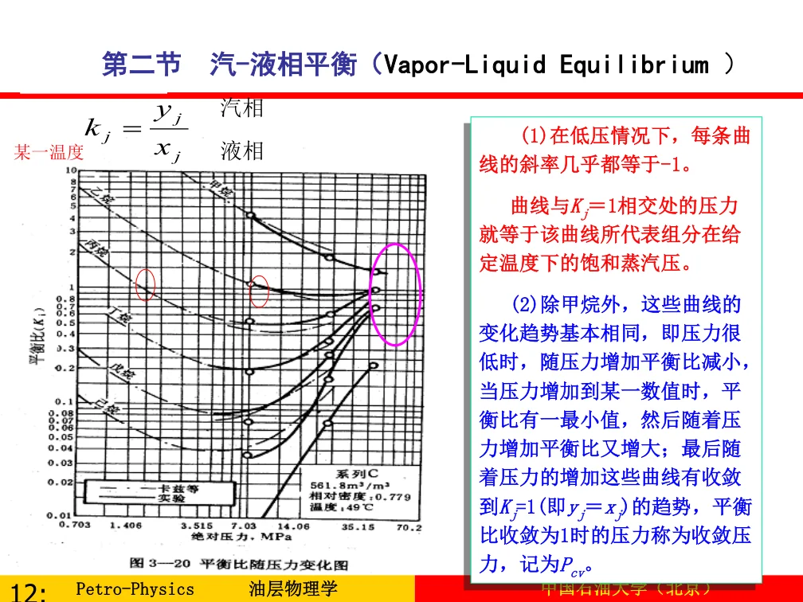
图上有什么：lg K–lg P 等温曲线族，图上分汽相/液相区，标 Kj=yj/xj 与"某一温度"；P144 复用同图讲收敛压力。
怎么读：每条曲线三段特征：①低压段斜率≈−1（Kj≈Pvj/P），与 Kj=1 的交点=该组分在此温度下的饱和蒸汽压；②中压段出现最小值（甲烷除外）；③高压段回升并趋于收敛到 Kj=1——收敛压力 Pcv。温度小于体系临界温度时实验做不出 K=1 点（先经泡/露点变单相），按趋势外推到 Kj=1 得"视收敛压力"，工程上统称收敛压力。
考点与易错："收敛压力三句话"（定义/与临界压力的关系：T=Tc 时即为临界压力/视收敛压力）是简答高频；甲烷无最小值是判断题坑。
37. 图3-22 NGAA K–P 图版示例（C₃，收敛压力 35 MPa）P145
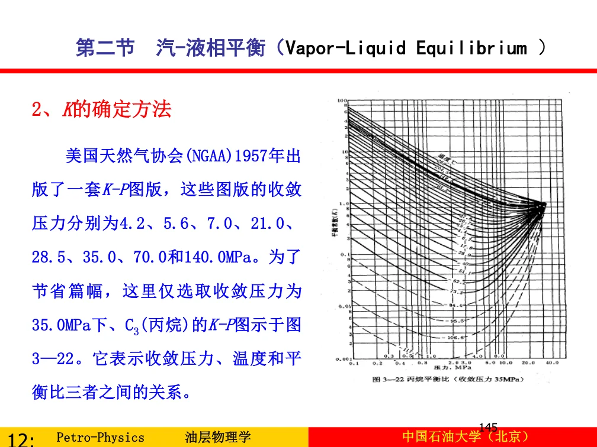
图上有什么：美国天然气协会 NGAA（1957）K–P 图版之一：收敛压力 35.0 MPa 下丙烷的 K–P 等温线族（右侧竖幅图版）。
怎么读：Kj=f(P，T，收敛压力)——查图三要素齐了才能读数；收敛压力全套分 8 档：4.2/5.6/7.0/21.0/28.5/35.0/70.0/140.0 MPa。
考点与易错：收敛压力不同→图版不同：组成越重（临界压力越低）选低收敛压力图版；考试给"组成已知"时按体系临界压力就近选档。
38. 闪蒸（接触脱气）PVT 筒降压序列图P148
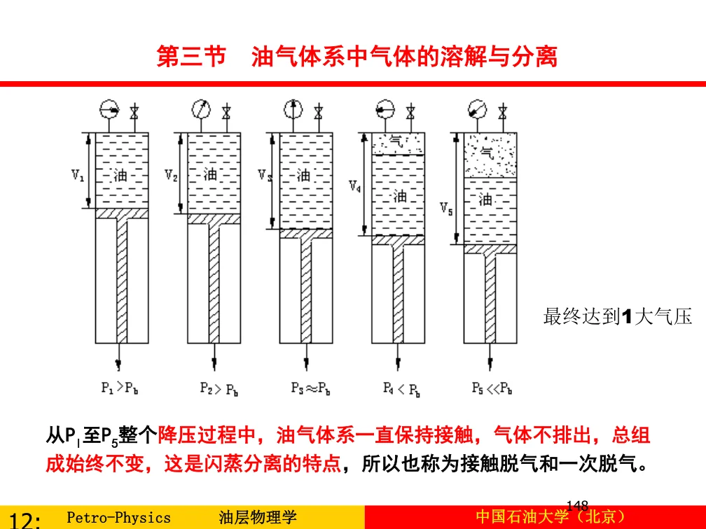
图上有什么：五只 PVT 筒示意：P₁>Pb → P₂>Pb → P₃≈Pb → P₄<Pb → P₅≪Pb（最终 1 大气压），气液始终共存筒内，体积 V₁→V₅ 依次标注。
怎么读：P₁→P₅ 全程油气保持接触、气体不排出、总组成不变——这就是闪蒸分离（=接触脱气=一次脱气）的定义特征。
考点与易错：三个名称指同一过程；判别口诀"组成变不变"：闪蒸不变，多级/微分都变。
39. 图3-25 接触脱气过程 P–V 关系图P149重点
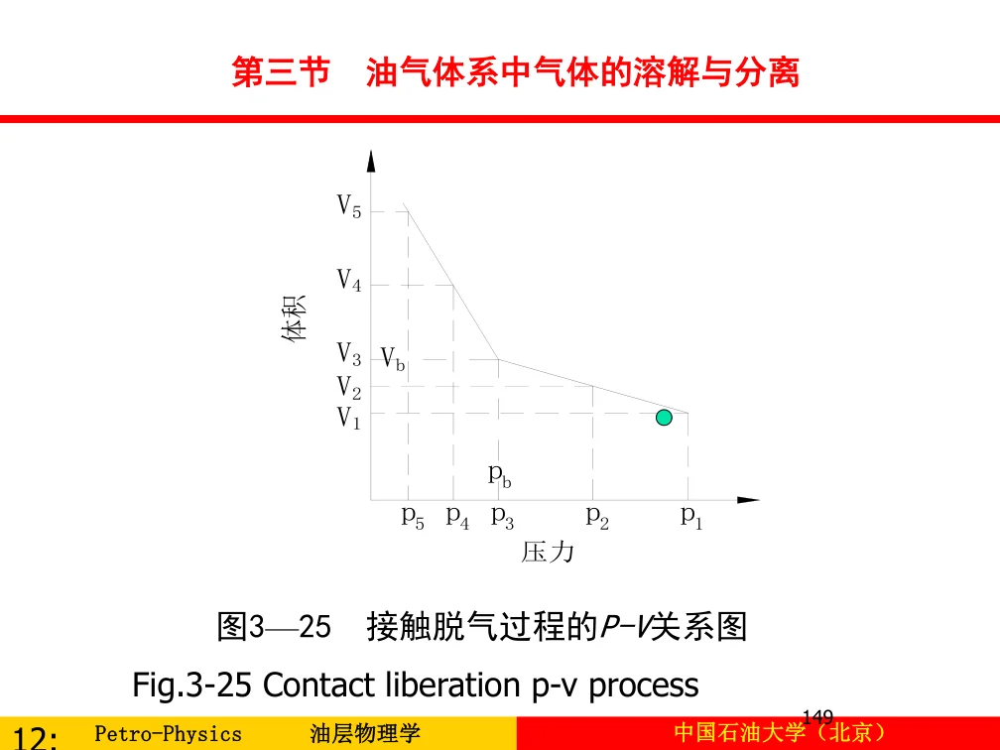
图上有什么：P–V 曲线，标出分级点 p₁~p₅、V₁~V₅ 与泡点 pb（对应体积 Vb）。
怎么读：曲线在 pb 处转折：上方（高压段）陡——液相压缩性小；下方（两相段）缓——气体膨胀主导。折点即泡点压力。
考点与易错："泡点压力怎么测"标准答案=PVT 筒恒组成膨胀实验中 P–V 关系折点（配合目测第一颗气泡）；这是实验课+简答双考点。
40. 图3-27 矿场多级脱气流程图（a 二级 / b 三级）P151重点
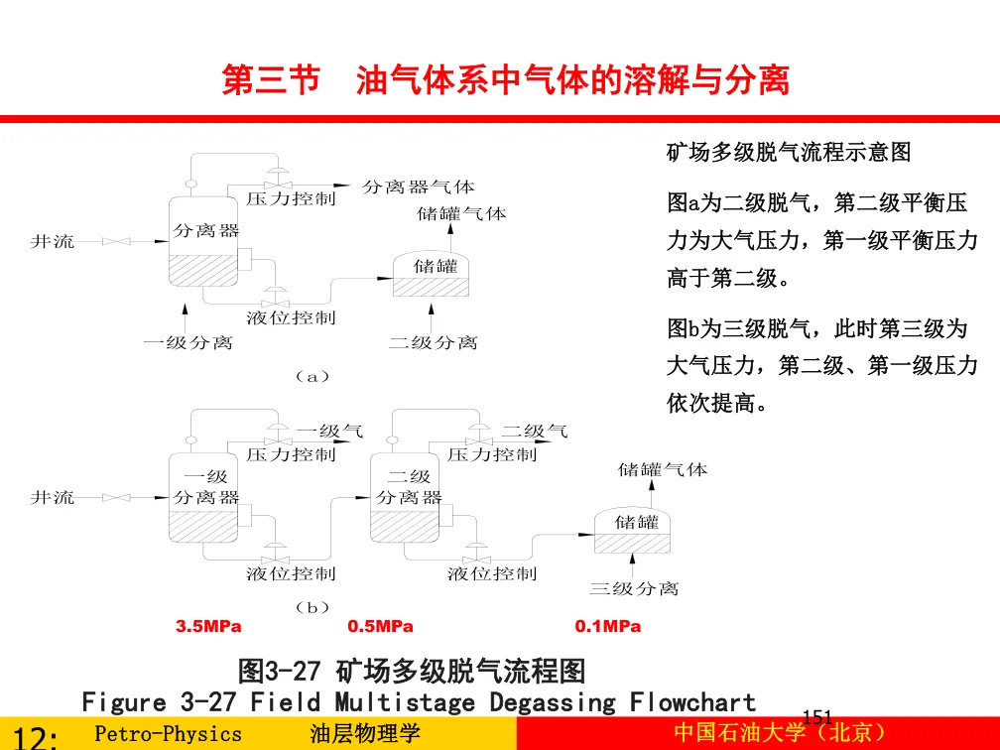
图上有什么：两幅流程图：(a) 二级脱气——一级分离器（3.5 MPa）→二级（0.5 MPa）→储罐（0.1 MPa）；(b) 三级脱气——三个分离器逐级降压后进储罐；每级配"压力控制＋液位控制"，各级分气分别引出（一级气、二级气、储罐气）。
怎么读：沿流程压力逐级降低、每级气液瞬时平衡后气走管线液走下级；矿场一般不超过三级。
考点与易错：多级脱气的好处=及时排走气体、减少轻质油被携带→地面获得的油多、气量少、气相对密度小；代价=设备多。典型压力 3.5/0.5/0.1 MPa 在附录 B。
41. 一次脱气与多级脱气对比表P153重点
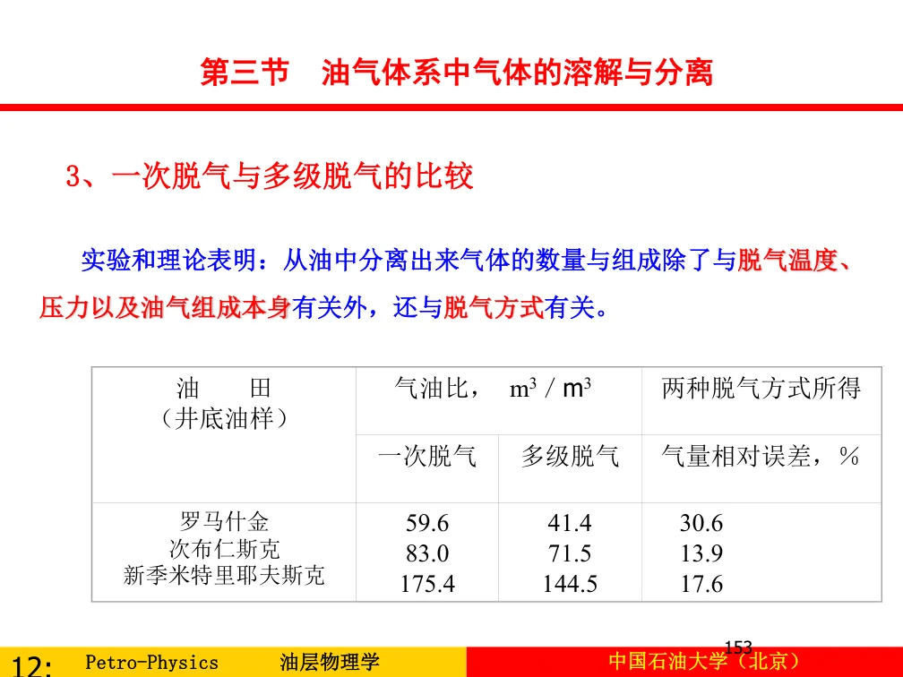
图上有什么：三个井底油样两种脱气方式的气油比对比：罗马什金 59.6 vs 41.4（相对误差 30.6%）；次布仁斯克 83.0 vs 71.5（13.9%）；新季米特里耶夫斯克 175.4 vs 144.5（17.6%），单位 m³/m³。
怎么读：一次脱气气油比一律更高（高 13.9%~30.6%）——因为油气始终接触，按平衡比重烃也进入气相，气量大且"重"（轻质油被带走）。
考点与易错：结论+机理（用 Kj=yj/xj 解释，P154 英文页原话）都考；矿场采用多级脱气的原因即此。
42. 图3-28 微分脱气过程示意图（a/b/c）P155
图上有什么：三个 PVT 筒状态：(a) 液体处于饱和状态 →(b) 退泵降压、气液共存 →(c) 进泵排出气体、剩余液体处于新的饱和压力；各筒标注液体/气体/摩尔数。
怎么读：每降一小级立刻把气体排走再继续降压——气体组成与液相组成时刻在变，这就是微分分离（差异分离）。
考点与易错：与闪蒸的对照（PVT 实验两种方式）：闪蒸=组成不变、气液始终接触；微分=每级排气、组成不断变化。地层内衰竭式开采近似微分脱气，地面分离器近似闪蒸。
43. 溶解度与温度关系曲线（Rs–P 等温线族）P157
图上有什么：不同温度下的溶解气油比–压力曲线族（图内标注不在文本层，据正文与教材通用形态）。
怎么读：温度↑→溶解气量↓，且压力越高时这种降低越显著；原因：温度↑使烃类气体的饱和蒸汽压↑，溶解能力下降。
考点与易错：Rs 影响因素四件套：压力（主导，Rs=αP）、温度、气体性质、原油性质——后两条见下面两图。
44. 气体相对溶解度倍数表P158
图上有什么：以甲烷溶解度=1 的倍数表：乙烷 5、丙烷 20、CO₂ 3.5、N₂ 0.25。
怎么读：溶解度排序：丙烷＞乙烷＞CO₂＞甲烷＞N₂。
考点与易错：重烃气比甲烷易溶、氮气最难溶——解释"天然气中重烃越多、Rsi 越高"。
45. 原油性质对溶解度的影响曲线P159
图上有什么：同一天然气在不同密度原油中的溶解度曲线族（据正文推断的对比图）。
怎么读：同样组成的天然气，在轻质油中的溶解度大于在重质油中的溶解度——轻质油轻烃组分多、极性胶质沥青质少。
考点与易错：轻质油藏 Rsi 高、Bo 大的根源（对照 P176 数据表：Rsi=580 的北海油田 Bo=1.78）。
46. 溶解曲线与脱气曲线的关系图（①②③三条线）P160重点
图上有什么：一张图三条曲线：①接触脱气曲线与接触溶解曲线（完全重合为一条）；②微分溶解曲线；③微分脱气曲线（②③不重合）；图上标注"微分分离、微分溶解、溶解气油比、生产气油比、闪蒸分离=接触溶解"。
怎么读：接触（闪蒸）过程可逆→两线重合；微分（差异）过程每级排气/进气、组成在变→不可逆→两线分离；低压段差别大、高压段差别小。
考点与易错："何时重合、何时不重合"就是附录 C 第 11 条的图形版；配合下面 47 条一起答。
47. 甲烷 vs 戊烷的微分溶解/脱气对比曲线P161–162
图上有什么：两张同构图：每张两条曲线（差异分离 differential liberation 与差异溶解 differential dissolution），分别画甲烷和戊烷。
怎么读：差异与组分挥发性有关：饱和蒸汽压大的甲烷两条曲线较接近；饱和蒸汽压小的戊烷两条曲线相差很大，且低压部分相差大、高压部分相差小（与图 46 的规律一致）。
考点与易错：答"为什么"的链条：饱和蒸汽压差→组分在气液间分配倾向不同→微分过程不可逆程度不同。
第四章 储层流体的高压物理性质（P164–204）
本章所有曲线图几乎都以 Pb 为分界点读图——先把"分水岭"画在脑中，再看每条曲线在两段的走向。
48. 溶解气油比 Rs–P 关系曲线P169重点
图上有什么：典型未饱和油藏的 Rs–P 曲线：P<Pb 段随压力升高 Rs 增大；P=Pb 处达最大值 Rsi（气体全部溶解）；P>Pb 段水平直线不变。
怎么读：水平段的含义——油已"吃饱"，压力再高也没有多余的气可溶；所以 P≥Pb 区间 Rs≡Rsi（原始溶解气油比）。
考点与易错：定义 Rsi=Vg/Vos（标 m³/m³，Vos 为脱气后地面油体积）；易错点：以为 P>Pb 后 Rs 继续增大——不对，是水平线。
49. 图4-3 地层油 Bo、Bt 与 P 的关系（含 Bt 曲线图）P171–172、P174重点
图上有什么：同一张图两条曲线：Bo 在 Pb 处最大（Bob）——P<Pb 段随 P↑ 而↑（溶解气越多体积越膨胀）、P>Pb 段随 P↑ 而↓（弹性压缩），原始压力 Pi 处的值记 Boi；Bt 只在 P<Pb 存在，随 P 降低一直增大，到 P=0.1 MPa 时 Bt=1+Rsi（最大）；图上另有"油层条件下不脱气 / 如果脱气"两条线的对比标注。
怎么读：以 Pb 为分水岭，两段机理完全不同：左侧"溶气膨胀"主导、右侧"压缩"主导；Bt=Bo+(Rsi−Rs)Bg 把析出气的地下体积也折算进来。
考点与易错：①Bo 最大值在 Pb 处（不是原始压力处）；②Bt 仅 P<Pb 存在，P≥Pb 时 Bt=Bob（老师批注"Where is Bt??"就是考这个）；③P=0.1 MPa 时 Bt=1+Rsi 必背。
50. 我国与国外油田 Rsi、Bo、Co 对比表P176
图上有什么：左右两表：我国 6 油田（Rsi 7.0~70.1 标m³/m³、Bo 1.09~1.22、Co (7.3~10.35)×10⁻⁴ MPa⁻¹），国外 6 油田（Rsi 1.1~580、Bo 1.05~1.78）。如大庆 P 层 48.2/1.13/7.7；北海埃克菲斯克 580/1.78；伊朗阿加贾里 190/1.42。
怎么读：Rsi 与 Bo 同向：溶解气越多，地下膨胀越厉害；我国陆相油田 Rsi 普遍偏低、Bo 多在 1.1 左右。
考点与易错：数据印象题（附录 B 末条）；Co 数量级 10⁻⁴ MPa⁻¹ 别记成 10⁻³。
51. 图4-5 原油粘度与温度关系（半对数）P178重点
图上有什么：半对数坐标：纵轴对数粘度 0.1~10000 mPa·s，横轴温度 0~300 ℃；三条曲线：水、相对密度 0.8762 原油、相对密度 0.9861 原油。
怎么读：三条曲线都随温度单调下降（半对数坐标下近直线）；密度越大（0.9861 那条）曲线越高、粘度越大；有的原油升温 10℃ 粘度约降一半（对温度极敏感）。
考点与易错："粘度对温度敏感"是稠油热采的物性依据；说粘度必须带温度（呼应第一章 P39）。
52. 压力对地层原油粘度的影响曲线（μ–P）P179重点
图上有什么：μ–P 曲线以 Pb 为界分两段（图内标注不可见，据正文"以饱和压力为界，不同区间段影响不同"）。
怎么读：P>Pb 段：降压→弹性膨胀→粘度↓；P<Pb 段：降压→脱气→液相变"重"→粘度随压力降低反而↑。即 μ 在 Pb 处取得最小值，曲线呈"V 字"。
考点与易错："粘度最小点在 Pb处"是判断题陷阱；与 Bo 在 Pb 处最大、Rs 在 Pb 处最大放一起对照记忆。
53. 典型未饱和油藏高压物性参数随 P 变化汇总图P180重点
图上有什么：图4-7"全家福"：五条曲线——原油相对密度 ρo、体积系数 Bo、气油比 GOR（即 Rs）、气体相对密度 ρg、原油粘度 μo——都以图中标 A 的虚线（泡点）为转折；老师批注"Where is Bt??"。
怎么读：逐条复述规律，全部以 Pb 为界；"Where is Bt??"的答案——P≥Pb 区间没有独立的两相体积系数（Bt=Bob），所以图上 Pb 右侧找不到 Bt 曲线。
考点与易错：综合分析题高发区：给你一条无标注曲线+压力轴，判断它是哪个参数——抓"在 Pb 处的形态"（最大/最小/水平/转折）逐一排除。
54. 表1-12 地层中常见离子的化合当量表P184重点
图上有什么：双栏离子表（阳离子/阴离子各 8 种）及化合当量：Ca²⁺ 20、Mg²⁺ 12.2、Na⁺ 23、Cl⁻ 35.3、SO₄²⁻ 48、HCO₃⁻ 61、CO₃²⁻ 30 等；附算例：Cl⁻ 7896 mg/L ÷ 35.3 = 225.6 毫克当量/升。
怎么读：化合当量=原子量/离子价数；毫克当量浓度=离子浓度(mg/L)÷化合当量。
考点与易错：这是苏林判别的前置计算；老师标"重要！！！"——考试必须先换算成毫克当量浓度再判水型。
55. 表1-14 苏林水型判别表P187重点
图上有什么：四行判别表（成因系数→水型→环境）：
| 当量比条件 | 水型 | 环境 |
|---|---|---|
| (Na⁺−Cl⁻)/SO₄²⁻ < 1 | 硫酸钠型 Na₂SO₄ | 大陆冲刷环境（地面水） |
| Na⁺/Cl⁻ > 1 且 (Na⁺−Cl⁻)/SO₄²⁻ > 1 | 重碳酸钠型 NaHCO₃ | 大陆沉积环境（含油良好标志） |
| (Na⁺−Cl⁻)/Mg²⁺ < 1 | 氯化镁型 MgCl₂ | 海洋沉积环境（海水） |
| Na⁺/Cl⁻ < 1 且 (Na⁺−Cl⁻)/Mg²⁺ > 1 | 氯化钙型 CaCl₂ | 深层封闭环境（气出水/含油气良好） |
怎么读：两步走：先用 Na⁺/Cl⁻ 当量比分两大支（>1 走硫酸钠/重碳酸钠支，<1 走氯化镁/氯化钙支），再算成因系数定具体水型。
考点与易错：判别表+四种水型的环境意义都是简答原文；计算题必须用毫克当量浓度（附录 C 第 12 条的坑）；例题 Example 1-1 与作业 HW1.23 老师点名。
56. 表1-13 我国和外国油田地层水化学成分与水型表P188
图上有什么：7 个油田地层水全分析表（10 列）：总矿化度 178~95313 mg/L、六大离子浓度、水型。如胜利 M 层 17960 mg/L→CaCl₂；任丘 Pz 层 178 mg/L→MgCl₂；孤岛 M 层 3228→NaHCO₃；东德克萨斯 64725→CaCl₂；加奇萨兰 95313→CaCl₂；凡尔马斯 5643→NaHCO₃。
怎么读：横看单油田离子构成，纵看水型与矿化度的关系：深层封闭环境的 CaCl₂ 型水往往矿化度最高。
考点与易错：结合表 55 练"给分析数据判水型"（老师布置的 Example 1-1、HW1.23 就是这种题）。
57. 天然气在地层水中的溶解度图版P190
图上有什么：溶解度图版（页面右半大幅）＋校正关系 Rs′=Rs×C（C 为含盐校正系数）。
怎么读：天然气在水中的溶解度数量级远小于在油中；压力↑溶解度↑，矿化度↑溶解度↓。
考点与易错：油 vs 水的溶气能力对比是选择题常客（水难溶气）。
58. 图4-9 地层水压缩系数 Cw 与压力、温度、溶气量的关系P192
图上有什么：Cw 曲线族（横贯整页的宽幅图版）；校正关系 Cw′=Cw×C（溶气校正）。
怎么读：Cw 数量级约 (3.7~5)×10⁻⁴ MPa⁻¹；溶解气使 Cw 增大（查校正曲线）。
考点与易错："计算油藏弹性能量时，地层水的弹性相当重要"——水压驱动的物性依据；与 Cg（大得多）、Co（同量级偏大）比大小。
59. 地层水体积系数与温度、压力关系图P194
图上有什么：Bw 随 T、P（及溶气量）变化的关系图（族）。
怎么读：Bw 随温度↑而↑、随压力↑而↓；数值仅 1.0~1.07 左右——远小于 Bo。
考点与易错：别把"Bw 随温度增大"与"Bo"的规律弄混：Bo 随温度总体也是变化但主要受溶气控制；Bw 的两个方向（T↑、P↓）是 PPT 原文结论。
60. 地层水粘度图P195
图上有什么：μw–T 曲线（不同矿化度/压力条件）。
怎么读：三条结论：温度↑粘度大大降低；压力影响甚微；矿化度↑粘度↑。
考点与易错：与原油粘度对照：原油在 P<Pb 段对压力敏感（脱气变稠），水对压力几乎不敏感。
61. 图4-14 地层油高压物性分析流程示意图P197
图上有什么：多级框图：流体取样（分地面取样法/井下取样法两支）→ 样品质检（气油比检验、流体组分分析、分离器液体收缩率测定）→ PVT 实验（P–V 关系与泡点压力、接触脱气、差异脱气、粘度测定）→ 试井和取样数据评价。
怎么读：两条取样路线目的不同：井下样（保持地层条件）测泡点压力、压缩系数等；地面样配分离器数据求原始气油比、体积系数、密度。
考点与易错：流程题/实验课考点；与第三章"接触脱气、差异脱气"术语一一对应。